3-1
第 3 章 国民收入
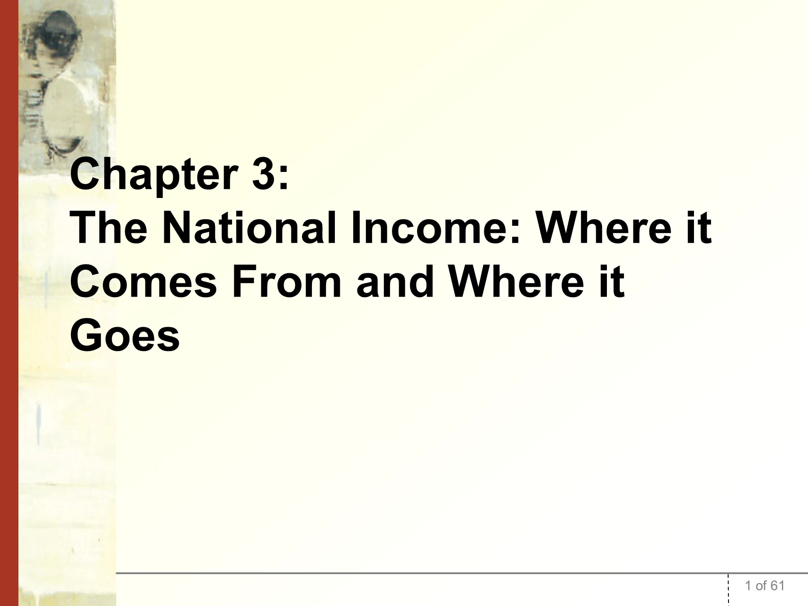
第 3 章
国民收入：从哪来、到哪去
英文原名 The National Income: Where It Comes From and Where It Goes
The National Income: Where It Comes From and Where It Goes · 65 页
| 中文 | English | 页 |
|---|---|---|
| 生产要素 | factors of production | 3-4 |
| 生产函数 | production function | 3-5 |
| 规模收益（不变／递增／递减） | returns to scale | 3-6 |
| 要素价格 | factor prices | 3-10 |
| 工资 | wage | 3-10 |
| 租赁物价 | rental rate | 3-10 |
| 实际工资 | real wage | 3-11 |
| 劳动的边际产量 | marginal product of labor | 3-15 |
| 边际产量递减 | diminishing marginal returns | 3-18 |
| 新古典分配理论 | neoclassical theory of distribution | 3-24 |
| 柯布-道格拉斯生产函数 | Cobb-Douglas production function | 3-27 |
| 资本收入份额 | capital's share of income | 3-27 |
| 基尼系数 | Gini coefficient | 3-30 |
| 可支配收入 | disposable income | 3-33 |
| 消费函数 | consumption function | 3-33 |
| 边际消费倾向 | marginal propensity to consume | 3-33 |
| 边际储蓄倾向 | marginal propensity to save | 3-33 |
| 实际利率 | real interest rate | 3-35 |
| 转移支付 | transfer payments | 3-37 |
| 可贷资金 | loanable funds | 3-39 |
| 私人储蓄／公共储蓄／国民储蓄 | private / public / national saving | 3-43 |
| 预算盈余 | budget surplus | 3-47 |
| 预算赤字 | budget deficit | 3-47 |
| 挤出 | crowding out | 3-56 |
| 符号 | 含义 | 单位 | 页 |
|---|---|---|---|
| K | 资本存量 | 实物单位 | 3-4 |
| L | 劳动投入 | 工时 | 3-4 |
| Y | 产出（＝收入） | 实物单位 | 3-5 |
| F(·) | 生产函数 | — | 3-5 |
| z | 规模因子 | 倍数 | 3-6 |
| W | 名义工资 | 货币 / 工时 | 3-11 |
| R | 名义租赁物价 | 货币 / 单位资本 | 3-11 |
| P | 产出价格 | 货币 / 单位产出 | 3-11 |
| W/P | 实际工资 | 产出 / 工时 | 3-11 |
| R/P | 实际租赁物价 | 产出 / 单位资本 | 3-11 |
| MPL | 劳动的边际产量 | 产出 / 工时 | 3-15 |
| MPK | 资本的边际产量 | 产出 / 单位资本 | 3-22 |
| α | 资本收入份额 | — | 3-27 |
| A | 技术水平 | — | 3-27 |
| C | 消费 | 实物单位 | 3-32 |
| I | 投资 | 实物单位 | 3-32 |
| G | 政府购买 | 实物单位 | 3-32 |
| T | 税收 | 实物单位 | 3-33 |
| r | 实际利率 | % | 3-35 |
| S | 国民储蓄 | 实物单位 | 3-43 |
| Δ | 变量的变化量 | 同该变量 | 3-44 |

第 3 章
国民收入：从哪来、到哪去
英文原名 The National Income: Where It Comes From and Where It Goes
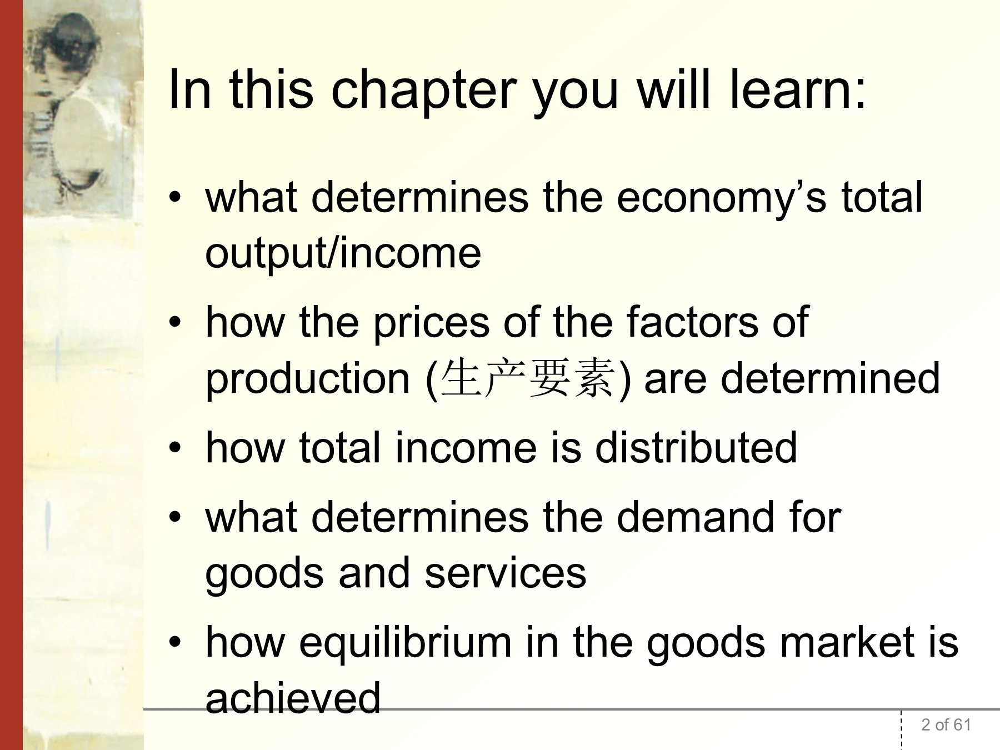
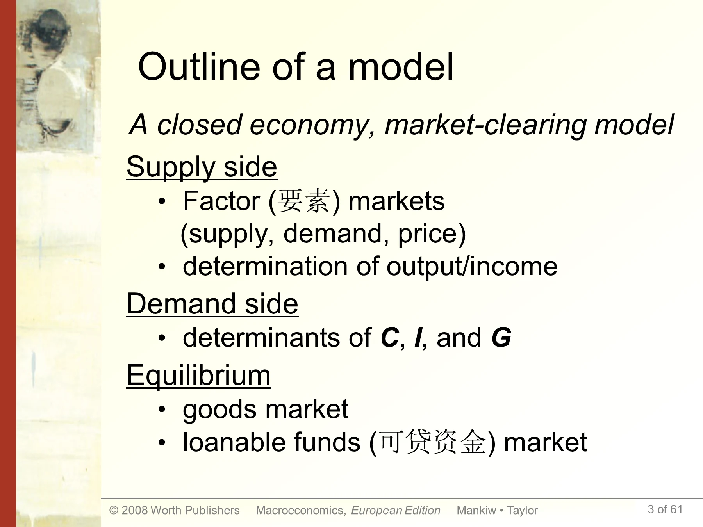
一个封闭经济、市场出清的模型。
上一页列出的五个问题，其实可以压成一条三步的链：先决定产出有多大，再决定产出归谁，最后决定产出的用途。这条链上每一环都只回答一个问题，环与环之间靠价格接起来。
先看两个限定词。封闭经济意味着没有进出口，于是总产出只有三个去处——消费、投资、政府购买，需求面因此只剩三项。这个假设不是对现实的描述，而是把注意力集中到国内储蓄与国内投资的关系上；开放经济要等到第 6 章，那时多出一个净出口，很多结论会变。
市场出清意味着价格有弹性，供求一旦不等，价格立刻调整到相等为止。这是长期视角的假设。它的代价是模型里不会出现失业和生产过剩，好处是价格成了唯一的调节变量，整个系统可以被解成一个方程组。短期价格黏性的情形是后面 IS-LM 的内容。
供给面排在前面，因为产出在这里是被"能力"决定的：给定资本、劳动和技术，能生产多少就是多少，与人们的购买意愿无关。先定蛋糕的大小，再谈蛋糕的用途，这个顺序决定了后面所有结论的方向。
均衡部分列了两个市场。产品市场的均衡是 Y = C + I + G，可贷资金市场的均衡是 S = I。这两条件看起来不同，其实是同一个条件的两种写法，第 3-52 页会把这一步补上。现在只需记住：两个市场共用同一个调节变量，实际利率 r。
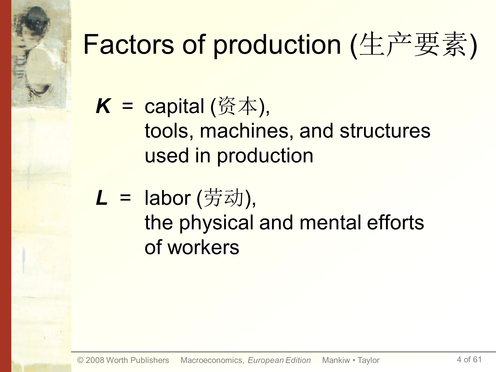
K ＝ 资本，用于生产的工具、机器与建筑物
L ＝ 劳动，工人付出的体力与脑力
把生产所需的生产要素归成两类，是为了让模型能算。K 是存量——某一时点上经济中已有的机器和厂房的数目；L 是劳动投入——一段时间内投入的工时。两者单位不同，不能相加，只能一起进生产函数。
土地被省略了。原则性课程里通常把土地列为第三种要素，但在宏观层面，土地的总量几乎不变，它的报酬在国民收入中的比重也小，把它并进 K 不会改变任何结论。真正会随时间积累、能解释增长的是机器设备和劳动力，模型抓住这两项就够了。
要注意 K 与 L 在模型中都是外生给定的。它们为什么是这么多、明年会变成多少，本章不回答——那是增长理论的任务。这里把它们当作已知常数，才能问出"给定这些要素，产出是多少、价格是多少"。
Students may have learned in their principles course that "land" or "land and natural resources" is an additional factor of production. In macro, we mainly focus on labor and capital, though. So, to keep our model simple, we usually omit land as a factor of production, as we can learn much of what we need to know about macroeconomics without the factor of production land.
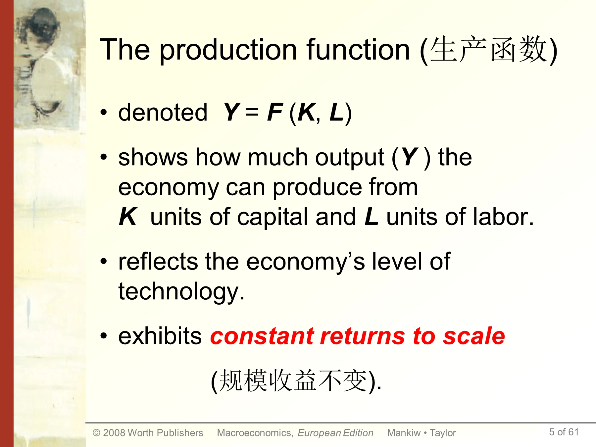
记为
Y = F (K, L)有了两种要素，产出就可以写成一个二元函数。函数形式本身就是技术：同样是 100 台机器和 1000 名工人，用流水线组织与用手工组织，产出不同，差别全部落在 F 的形状里。技术改进在这个写法下表现为整条函数的上移——同样的投入给出更多产出。
规模收益不变（constant returns to scale）是这个函数被赋予的一条性质，不是从别处推出来的定理。它的意思是：把两种要素同时按同一比例放大，产出也按同一比例放大。用式子写就是
F (zK, zL) = z · F (K, L) 对任意 z > 0为什么可以这样假设？有一个很朴素的理由，通常叫复制论证。假如一座工厂用一百台机器、五百名工人，年产一千万元。现在原样再建一座一模一样的工厂，机器和人各翻一倍，两座工厂合起来的产量自然是 2000 万元。真实经济中新增的规模往往比复制更有效率（可以用更专业的分工、更大的机器），也可能更没效率（管理半径太长），但作为一阶近似，不变是最干净的基准。
需要提前分清两件事，后面几页会反复用到。规模收益说的是所有要素同时变化时产出的反应，是一个关于"整体放大"的性质；边际产量递减说的是只有一种要素变化、其他要素不动时产出的反应。两者可以同时成立：一个规模收益不变的生产函数，其劳动的边际产量通常随劳动增加而下降。把这两个概念混为一谈，是这一章最常见的错误。
函数里的技术 A 在这一页被省略了。第 3-27 页写柯布-道格拉斯形式时会把它显式写出来，那时可以看到技术如何单独影响产出。
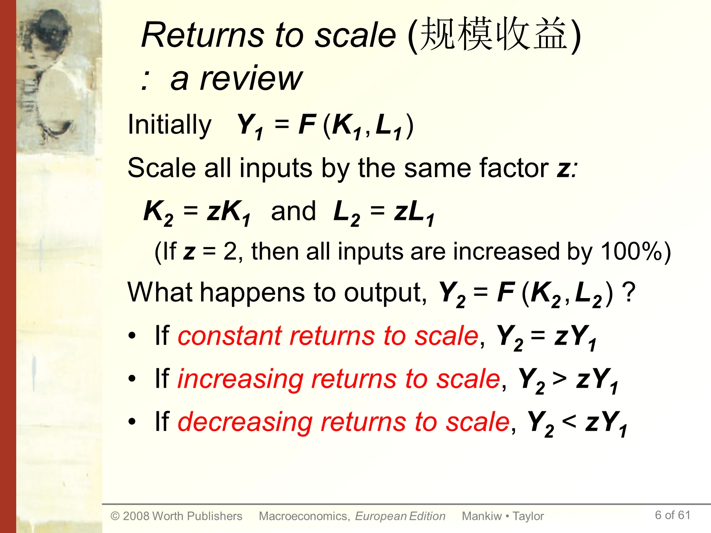
初始时
Y₁ = F (K₁ , L₁)把所有投入按同一因子 z 放大：
K₂ = z K₁ 且 L₂ = z L₁若 z = 2，则所有投入都增加 100%。
产出 Y₂ = F (K₂ , L₂) 会怎样？
判断规模收益，只有一个动作：把 K 和 L 同时乘上同一个 z，看产出乘上了多少。这个 z 必须对两种要素是同一个数——如果只放大一种，测到的是边际产量，不是规模收益。
三种情形的差别全在产出与 z 的比较上。乘上 z 之后产出恰好也是原来的 z 倍，是不变；多于此，是递增；少于此，是递减。递增的来源通常是分工深化和设备的大型化：规模翻倍之后，可以让每个工人只做一道工序，可以上只有大产量才划算的自动化线。递减的来源是管理：人越多，协调成本上升得越快，最终抵消专业化的好处。
这个判据是沿一条射线做的：从原点出发，按 K/L 不变的方向往外走。它问的是"企业整体放大一倍，产量放大多少"，与"在既定的工厂里多雇一个人，产量增加多少"是两个完全不同的问题。后者的答案是边际产量，而边际产量递减几乎总是成立——在同一座厂房里不断加人，人均可用的机器越来越少，产量增加得越来越慢。
一个规模收益不变的经济，完全可以同时具有递减的劳动边际产量。举个可以心算的例子：Y = √(K·L)。把 K、L 各乘 4，Y 变成 √(16KL) = 4√(KL)，正好是 4 倍，规模收益不变；但固定 K = 1 时，L 从 1 增到 4，Y 从 1 增到 2，第二个人的边际产量只有第一个人的三分之一，递减得很明显。两件事在同一个函数上并存，毫无矛盾。
常见误读：把"规模收益递减"当成"边际报酬递减"的另一种说法。前者要求所有要素同比例变化，后者要求只有一种要素变化，两者的成立条件互不排斥。
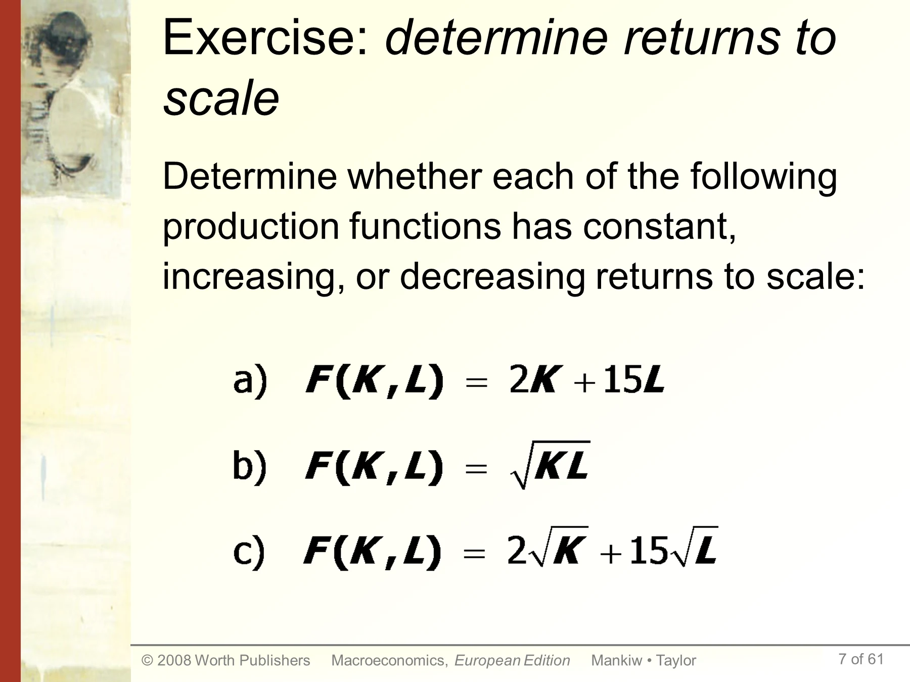
判断下列生产函数是规模收益不变、递增还是递减：
(a) F (K, L) = 2K + 15L (b) F (K, L) = √(K L) (c) F (K, L) = 2√K + 15√L三个函数用同一个办法处理：把 K 换成 zK、L 换成 zL，看能不能把 z 提到函数外面。
(a) 代入得 F (zK, zL) = 2zK + 15zL = z (2K + 15L) = z Y。z 被完整地提了出来，产出正好放大 z 倍，规模收益不变。这个函数是线性的，两种要素可以完全替代，扩大规模只是把同一条生产线复制若干份。
(b) 代入得 F (zK, zL) = √(zK · zL) = √(z² K L) = z √(K L) = z Y。根号里的 z² 开出来正好是 z，同样是规模收益不变。这个函数值得记住，它是最简单的柯布-道格拉斯形式，指数各为二分之一。
(c) 代入得 F (zK, zL) = 2√(zK) + 15√(zL) = √z · (2√K + 15√L) = √z · Y。提出来的不是 z，而是 √z。当 z > 1 时 √z < z，所以 规模收益递减。
第三个小题的机制值得多想一步。它由两块相加而成，每一块单独看都是"投入翻倍、产出只翻 √2 倍"的递减结构。两个递减的部分加在一起，整体仍然是递减的。反过来，如果某一块是递增的，加总之后就未必——这说明规模收益是整体性质，不能从某一项的指数直接读出来，必须整体代入。
若不想做代数，也可以取具体数字验证：令 K = L = 1、z = 2。(a) 得 17 与 34，翻倍；(b) 得 1 与 2，翻倍；(c) 得 17 与 2√2 + 15√2 ≈ 24.0，不到 34，递减。数字法在考场上更快，但它只验证了一个点，严格判断仍要靠代数。
Answers: (a) and (b) have constant returns to scale. (c) has decreasing returns to scale. An easy way to see this is to pick two values for K and L (say, K=1 and L=1), and a value for z (say, z=2). Then, compare F(K,L) with F(zK,zL).
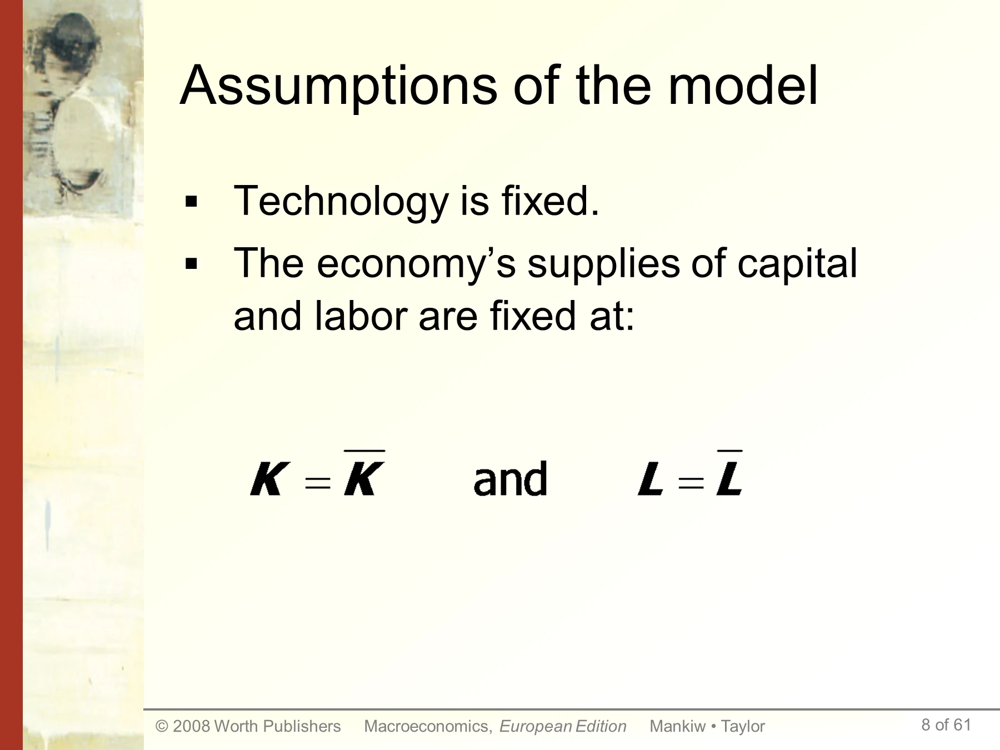
符号上要分清两件事：不带横线的 K、L 是变量，可以取各种数值，生产函数 F 对它们求导才有意义；带上横线的 K̄、L̄ 是这两个变量在当前时点取到的具体数值。等式 K = K̄ 说的是"资本这个变量现在等于这个给定的量"，而不是"资本永远不动"。
把三样东西同时钉住——技术、资本、劳动——供给面就封闭了。这样做的收益很直接：产出变成一个数，而不是一条随投入变化的曲线，后面所有的均衡分析都在这一个数上展开。代价是模型无法回答"经济为什么增长"，因为它把增长的三个来源全部设成了常数。
这三条外生性假设都会在第 7、8 章被逐一松开：投资使 K 增长，人口增长使 L 增长，技术进步使 F 上移。到那时，本章这套"给定要素求产出"的分析仍然是每一步的起点——增长理论只是把本章的静态图景一帧一帧接起来。
Emphasize that "K" and "L" (without bars on top) are variables - they can take on various magnitudes. On the other hand, "Kbar" and "Lbar" are specific values of these variables. Hence, "K = Kbar" means that the variable K equals the specific amount Kbar.
Regarding the assumptions: In chapters 7 and 8 (Economic Growth I and II), we will relax these assumptions: K and L will grow in response to investment and population growth, respectively, and the level of technology will increase over time.
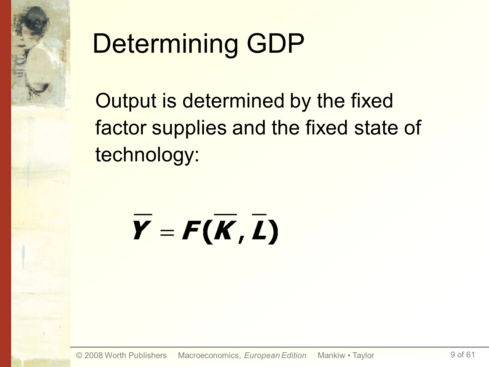
产出由固定的要素供给与固定的技术水平决定：
Ȳ = F (K̄ , L̄)把 K̄ 和 L̄ 代进生产函数，得到的是一个确定的数 Ȳ。它表示这个经济在现有机器、现有劳动力和现有技术下最多能生产多少，而不是人们想要多少。这一层意思很关键：在本章的模型里，产出由供给面单独决定，需求面无法让它变多或变少。
为什么可以这样处理？因为假设了价格有弹性。如果需求不足，价格会下降，实际工资和实际租赁物价跟着调整，直到企业愿意雇满全部要素、生产出 Ȳ 为止。产出的缺口由价格吸收，不由数量吸收。短期里价格调不动，数量才会调整，失业才会出现——这正是本章与后面 IS-LM 的分界。
所以 Ȳ = F (K̄ , L̄) 这个式子在整章里不会再变。后面所有关于税收、政府购买、赤字的分析，讨论的都是这固定的一块产出如何被分配、被使用，而不是它的大小。
Again, emphasize that "F(Kbar,Lbar)" means we are evaluating the function at a particular combination of capital and labor. The resulting value of output is called "Ybar".
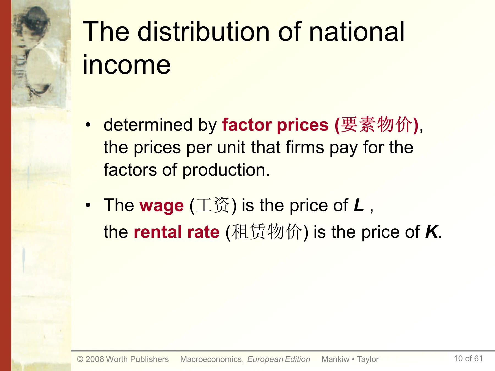
由要素价格决定，即企业为每单位生产要素支付的价格。
产出有了，接下来问它归谁。第 2 章的核算恒等式说产出的价值等于收入的价值，收入被付给工人、资本所有者等等。于是分配问题可以换一个问法：要素的价格是多少。价格乘以数量就是该类要素的总收入，所有要素的收入加起来正好是总产出。
两种要素对应两个价格。劳动的价格叫工资，资本的价格叫租赁物价——注意是"租用一单位资本一年的费用"，不是买下这台机器的价钱。这个区分很重要：机器的购买价格是资产价格，由未来的租金流折现决定；而企业每年决定要不要多用一台机器时，面对的是租金。
把分配问题完全交给价格，是这个模型的一个强主张。它意味着分配不是由谈判、惯例或政策直接决定的，而是由要素的相对稀缺程度和它们在生产中的贡献决定的。谁的收入高，取决于谁的边际贡献大、谁更稀缺。这个逻辑会在第 3-24 页被正式命名为新古典分配理论。
Recall from chapter 2: the value of output equals the value of income. The income is paid to the workers, capital owners, land owners and so forth. We now explore a simple theory of income distribution.
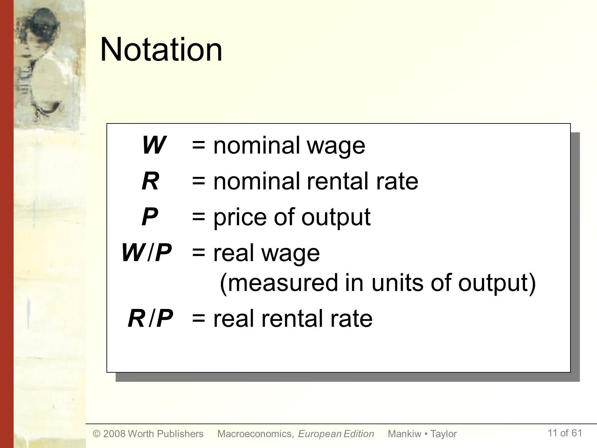
名义量用货币计量，实际量用产出计量，两者相差一个价格水平。把单位写出来，换算关系就一目了然：设 W ＝ 10 元／小时，P ＝ 2 元／单位产出，则
W/P = (10 元/小时) ÷ (2 元/单位产出) = 5 单位产出/小时元在分子分母上约掉了，剩下的单位是"每小时能换到多少单位的产出"。这就是实际工资的含义——它是工资的购买力，而不是工资单上的数字。企业实际支付的是货币，但决定雇几个人的是这些货币能折成多少产出。
为什么要绕这一道？因为只有实际量才进入企业的决策。如果工资和产出价格同时翻倍，W/P 不变，企业的雇工意愿不变，产出和就业也不变——这就是后面要讲的货币中性在要素市场上的表现。名义工资翻倍而物价不变，实际工资才真的上升，雇工才会减少。凡是影响决策的价格，都要写成实际量。
租赁物价 R 同理。R/P 是租一台机器一年要付多少单位产出，它是企业决定资本使用量的那个价格。
It might be worthwhile to refresh students' memory about nominal and real variables. The nominal wage & rental rate are measured in currency units. The real wage is measured in units of output.
To see this, suppose W = €10/hour and P = €2 per unit of output. Then, W/P = (€10/hour) / (€2/unit of output) = 5 units of output per hour of work. It's true, the firm is paying the workers in money units, not in units of output. But, the real wage is the purchasing power of the wage - the amount of stuff that workers can buy with their wage.
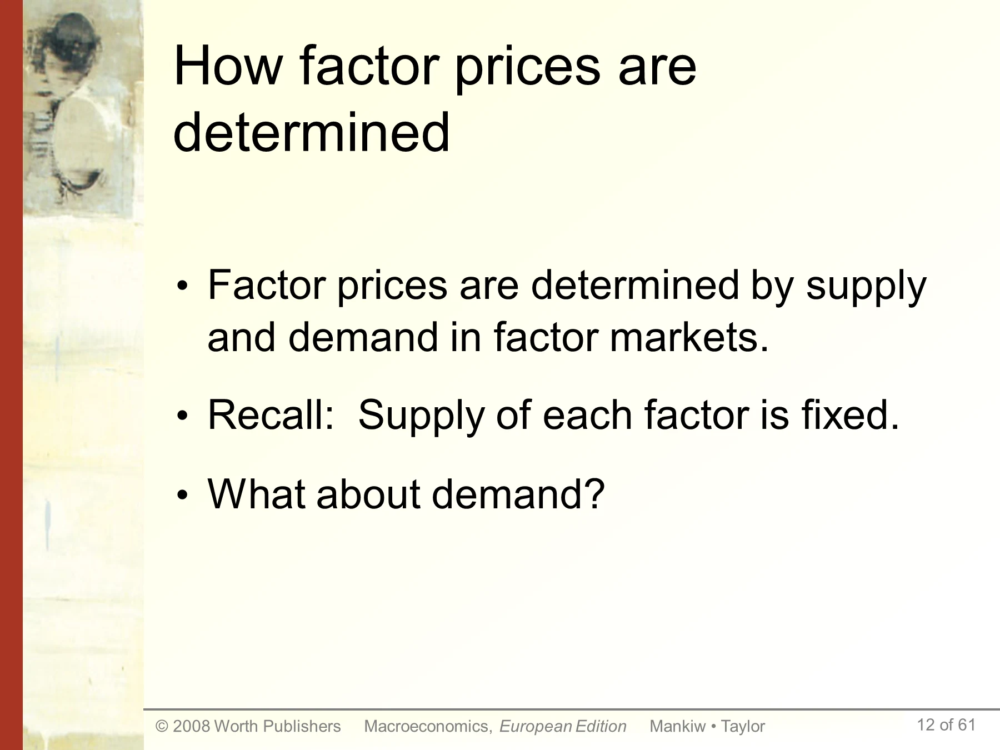
要素价格由要素市场上的供给与需求决定。
回忆：每种要素的供给是固定的。
那么需求呢？
供给这一侧已经没有问题了：K̄ 和 L̄ 是给定的常数，画在图上就是一条垂直线，无论价格高低，供给量都是那么多。价格因此不可能由供给单独决定，它只能由需求一侧压出来。
于是全部工作转到一个问题上：企业愿意雇多少劳动、租多少资本。这个问题的答案不来自技术，而来自企业的利润最大化——在竞争性市场上，企业面对给定的 W、R、P，选择投入量使利润最大。下一页开始就沿着这条线走，先做劳动，再做资本，两者的逻辑完全平行。
Since the distribution of income depends on factor prices, we need to see how factor prices are determined. Each factor's price is determined by supply and demand in a market for that factor. For instance, supply and demand for labor determine the wage.
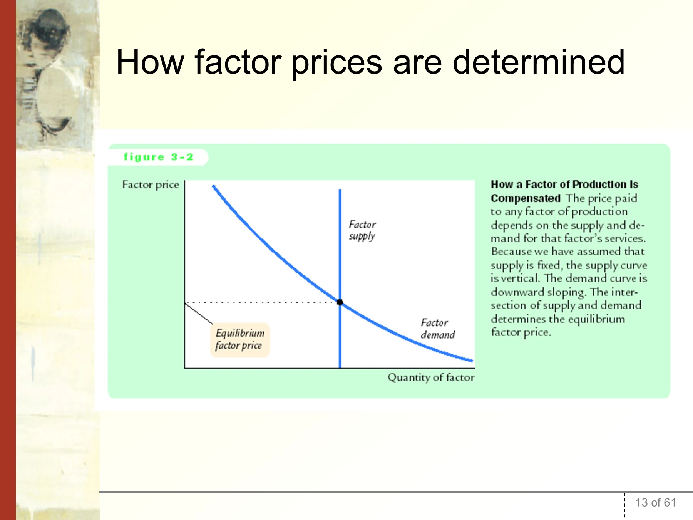
图 3-2 一种生产要素如何得到报酬
图中 横轴为要素数量，纵轴为要素价格。垂直的「要素供给」线与向下倾斜的「要素需求」线相交，交点对应的价格即均衡要素价格。图旁文字：任何一种生产要素得到的价格，取决于该要素服务的供给与需求。由于假定供给固定，供给曲线垂直；需求曲线向下倾斜；两条曲线的交点决定均衡要素价格。
这张图是全章后面所有图形的母版，值得先看清结构。横轴是数量，纵轴是价格，供给是一条垂线——位置由 K̄ 或 L̄ 决定，斜率无穷大，意思是价格怎么变供给都不变。需求向下倾斜，理由暂时留白，下一页补。
两条线交于一点，该点给出均衡价格。它的经济含义是：只有这个价格，企业才愿意雇用（或租用）恰好全部的固定供给量。价格高于它，企业想雇的少于可供的量，要素过剩，价格被压下来；价格低于它，企业想雇的超过可供的量，要素短缺，价格被抬上去。
注意这条垂线的位置不是市场调节出来的，而是模型外生给定的。所以图上的"均衡"只调节价格一个量，数量始终钉在 K̄ 或 L̄ 上。这也解释了为什么本章的产出是固定的：要素总是被雇满，产出自然总是 Ȳ。
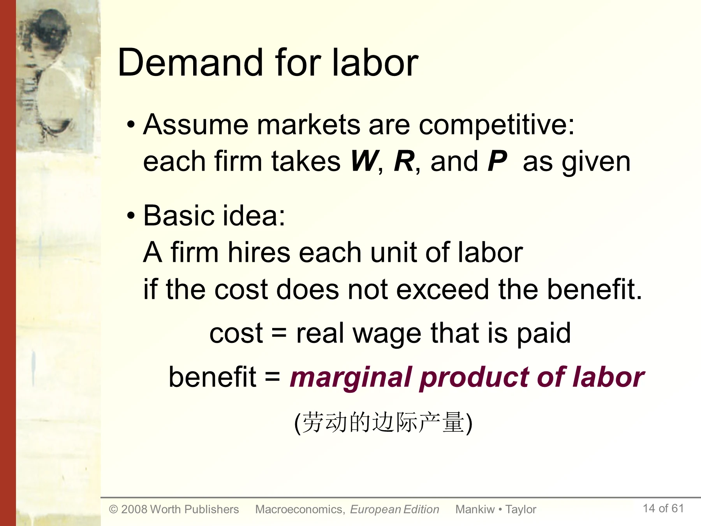
假设市场是竞争性的：每家企业都把 W、R、P 视为给定。
基本思路：只要成本不超过收益，企业就会雇用每一单位劳动。
企业雇人的决策可以化简成一次边际比较：多雇一个人，多付出多少、多得到多少。付出的是实际工资 W/P，得到的是这个人带来的额外产出 MPL。两者都是产出单位，可以直接相减。
为什么成本是 W/P 而不是 W？因为收益 MPL 是以产出计的。多雇一个人多出 MPL 单位的产品，这些产品卖掉能换回 P × MPL 元；多雇一个人要多付 W 元。用货币比较，判据是 P × MPL > W；两边同除以 P，就变成 MPL > W/P。两种写法等价，后一种更省事，因为 P 被约掉了——企业雇多少劳动，与物价水平无关，只与实际工资有关。
"竞争性"这个假设在这里承担了实质工作。它意味着单个企业太小，改变不了 W、R、P，只能接受市场价格。如果企业有买方垄断力量，多雇人就要抬高全厂的工资，成本曲线会变形，结论随之改变。本章不处理这种情形。
还有一层隐含假设：企业只关心利润，不关心工人的效用，也不受任何雇工配额约束。于是"成本不超过收益就雇"这条规则可以一路推到边际上，直到再多雇一个人恰好不赚钱为止。
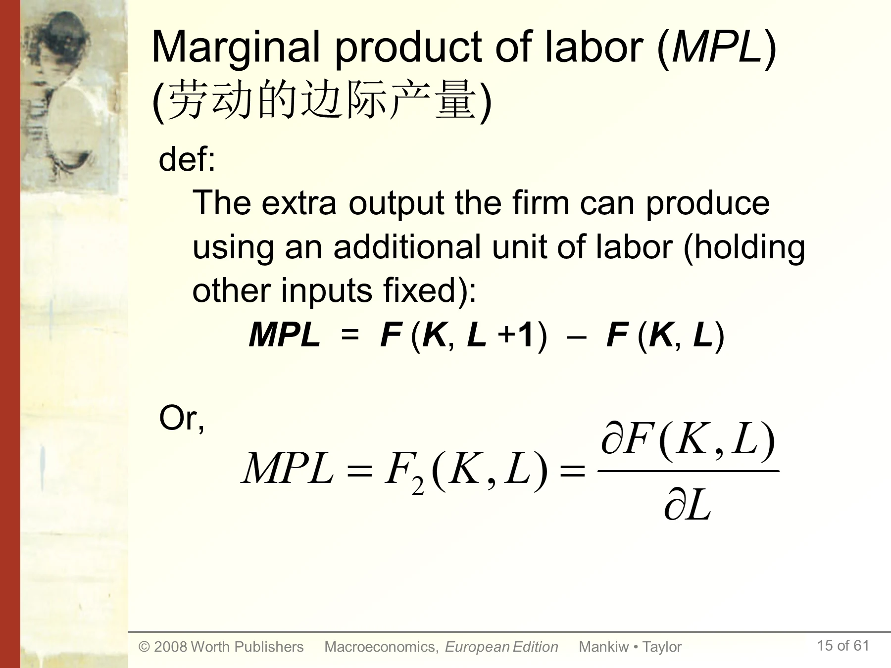
定义：在其他投入固定的条件下，企业多用一单位劳动所能多生产出的产出：
MPL = F (K, L + 1) − F (K, L)或者，
MPL = F₂ (K, L) = ∂F (K, L) / ∂L定义里的"其他投入固定"不能省。它把 K 钉住，只让 L 变，于是产出的变化全部归因于劳动的增加。若两种要素同时变，测到的就是规模效应，不再是边际产量。
两行式子说的是同一件事的两种精度。第一行是离散的：L 加一个人，产出从 F(K,L) 变到 F(K,L+1)，差额就是这个人带来的产出。第二行是连续的：让 L 变动一个无穷小量，产出的变化率就是偏导数，F₂ 表示对第二个自变量求偏导。当雇工是以"人"为单位时，第一行才是可观测的量；当 L 被当作连续可分的工时，第二行更好用。人数很多时两者几乎相等。
把它和 3-16 页的表格对照：从 L = 2 到 L = 3，Y 从 19 增到 27，MPL ＝ 8。这就是第一行式子的算术。偏导数的写法在图形上对应生产函数曲线在某点的切线斜率：曲线越陡，MPL 越大；曲线变平，MPL 变小。
为什么企业只关心 MPL，不关心平均产量？因为决定"要不要再多雇一个"的，是那一个人的产出，不是全厂的平均产出。平均产量已经由前面的人实现，与这一次雇工决策无关。这个区别在下一节的数字例子里会变得非常具体。
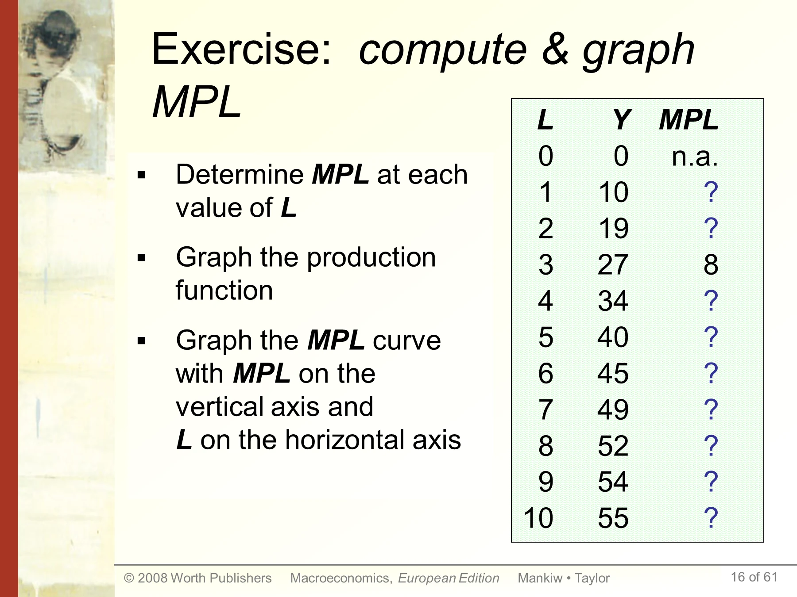
| L | Y | MPL |
|---|---|---|
| 0 | 0 | n.a. |
| 1 | 10 | ? |
| 2 | 19 | ? |
| 3 | 27 | 8 |
| 4 | 34 | ? |
| 5 | 40 | ? |
| 6 | 45 | ? |
| 7 | 49 | ? |
| 8 | 52 | ? |
| 9 | 54 | ? |
| 10 | 55 | ? |
求出每个 L 对应的 MPL；画出生产函数；再以 MPL 为纵轴、L 为横轴画出 MPL 曲线。
表里 Y 那一列是给定的，MPL 要自己算。规则只有一条：某一行的人均产出增量等于本行 Y 减上一行 Y。第一行没法算，因为 L 从零到一时上一行没有"第 0 个人"，所以标 n.a.。第三行给出 27 − 19 = 8，正好对上已填的 8，可以据此校验算法。
算完会看到一条明显的规律：10、9、8、7、6、5、4、3、2、1，每多一个人少 1。这是刻意构造的整齐数字，真实的函数不会这么规整，但方向是对的——Y 一直在增，增得越来越慢。第 10 个人只带来 1 单位产出，而第一个人带来 10 单位。
画图时要注意两张图的对应关系：左图纵轴是 Y，右图纵轴是 MPL，横轴都是 L。左图曲线上某一点的切线斜率，就是右图在同一个 L 处的纵坐标。左图越来越平，右图就一路下降。
This exercise is pretty basic review. It's good for students who have not had principles of economics in a few years, and students whose graphing skills could benefit from some remedial attention. Many instructors could probably "hide" or omit this and the next slide from their presentations.
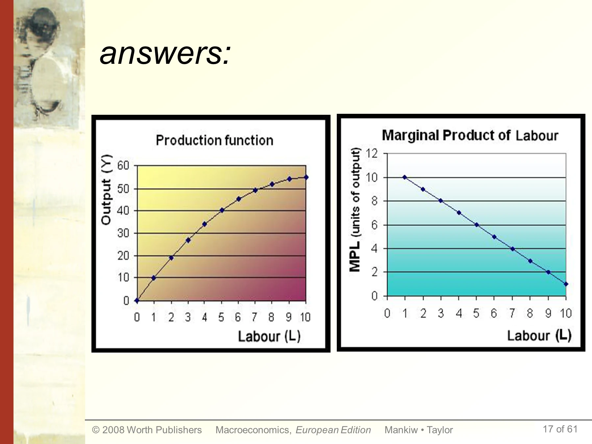
左图 生产函数。横轴为劳动 L（0–10），纵轴为产出 Y（0–60）。曲线从原点出发，向右上升但逐渐变平，经过 (1,10)、(2,19)、(3,27)、(4,34)、(5,40)、(6,45)、(7,49)、(8,52)、(9,54)、(10,55)。
右图 劳动的边际产量。横轴为劳动 L（0–10），纵轴为 MPL（0–12，单位：产出）。曲线为一条向右下方倾斜的直线，从 (1,10) 依次经过 (2,9)、(3,8)、(4,7)、(5,6)、(6,5)、(7,4)、(8,3)、(9,2)，到 (10,1)。
左图的形状叫凹：始终上升，但斜率一路变小。这种形状不是画图时的美化，而是数据本身给出的——Y 的增量从十一路降到一，斜率必然越来越小。
右图把斜率单独画了出来。因为增量每次恰好少一，这条曲线成了一条直线；如果 Y 的增量减少得更快，右图就会是向下弯的曲线。所以右图的斜率反映的是"边际产量本身变化得多快"，而右图的高度才是边际产量。
两张图之间还有一层量的关系：左图曲线下方的面积没有经济含义，但左图从原点到某点的高度，等于右图从 L = 0 到该点的高度逐格累加。比如 L = 3 时 Y = 27，而 10 + 9 + 8 = 27。产出是各单位劳动边际产品的总和，这个恒等关系在后面讲欧拉定理时会再用一次。
两张图的横轴相同、纵轴不同，读图时不要把它们叠在一起看。左图问"总共生产了多少"，右图问"最后一个人生产了多少"。
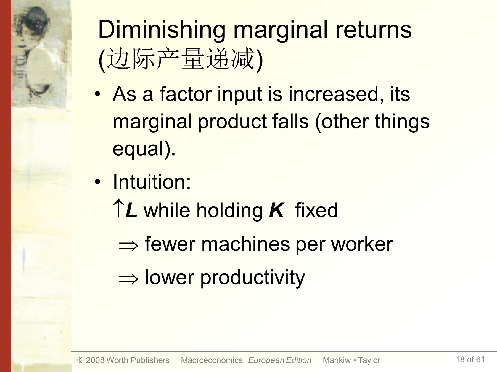
当一种要素投入增加时，它的边际产量下降（其他条件不变）。
直觉：L 增加而 K 固定
上一页那条一路下降的 MPL 曲线，背后是一条很朴素的道理：机器数量不变，人越加越多，人均可用的设备就越少。第一个工人可以独占一台车床，第十个工人只能排队等。产出还在增加，因为多一双手总能多干一点活，但增加得越来越少。
要注意括号里那五个字——其他条件不变。递减是"只增加一种要素"时出现的现象。如果与此同时机器也在增加，人均设备没有变少，边际产量就未必下降。这就是为什么规模收益不变与边际产量递减可以并存：前者让两种要素同比例增加，人均设备不变；后者只让一种要素增加，人均设备减少。同一个函数，沿射线走是规模不变，沿水平线走是边际递减。
这条性质不是逻辑必然，而是对生产技术的经验判断。理论上可以构造边际产量递增的生产函数（比如某个环节必须凑够人数才能开工），但绝大多数真实生产过程在要素可分的范围内都表现为递减。没有递减，企业的规模就会无限膨胀——如果每多雇一个人带来的产出越来越多，企业会一直雇下去，市场结构就不可能是竞争性的。递减是竞争性假设能够成立的技术基础。
数学上，递减意味着 ∂MPL/∂L = ∂²F/∂L² < 0，即生产函数对 L 是凹的。这条性质决定了后面劳动需求曲线向下倾斜，也决定了均衡的存在与唯一。
Tell class: Many production functions have this property.
This slide introduces some short-hand notation that will appear throughout the PowerPoint presentations of the remaining chapters: The up and down arrows mean increase and decrease, respectively. The symbol means "causes" or "leads to." Hence, the text after "Intuition" should be read as follows: "An increase in labor while holding capital fixed causes there to be fewer machines per worker, which causes lower productivity." Many instructors use this type of short-hand (or something very similar), and it's much easier and quicker for students to write down in their notes.
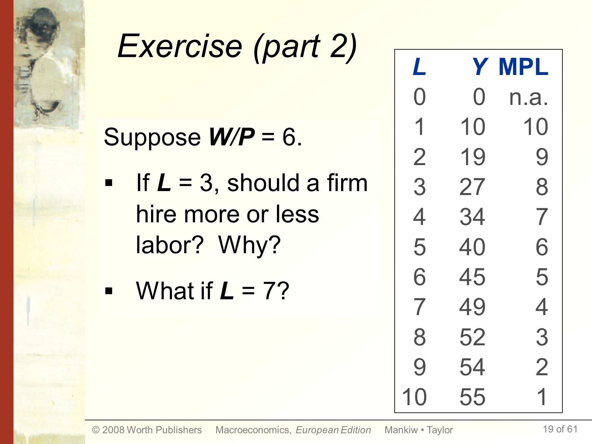
| L | Y | MPL |
|---|---|---|
| 0 | 0 | n.a. |
| 1 | 10 | 10 |
| 2 | 19 | 9 |
| 3 | 27 | 8 |
| 4 | 34 | 7 |
| 5 | 40 | 6 |
| 6 | 45 | 5 |
| 7 | 49 | 4 |
| 8 | 52 | 3 |
| 9 | 54 | 2 |
| 10 | 55 | 1 |
设 W/P = 6。
若 L = 3，企业应该多雇还是少雇劳动？为什么？
若 L = 7 呢？
实际工资给定为 6，这个数字要跟每一行的 MPL 逐个比。L = 3 时，第 3 个人的边际产量是 8，比工资高 2，说明这个人带来的产出超过他的成本，企业多雇一人能多赚 2 单位产出，所以应该继续增加劳动。
L = 7 时，第 7 个人的边际产量只有 4，低于工资 6，这个人是在亏钱的，企业应该减少雇工。把这两点放在一起，最优雇工量只能落在两者之间。
具体落在哪？看 L = 5：MPL ＝ 6，恰好等于工资。此时第 5 个人带来的产出正好抵消他的成本，多雇一个（MPL ＝ 5）会亏，少雇一个（放弃 MPL ＝ 6）会少赚，所以五就是最优雇工量。
这个比较过程揭示了一条规则：企业会把劳动雇到 MPL 恰好等于实际工资为止。注意这条规则不需要企业知道整条 MPL 曲线，它只需要在每一个当下问"再多一个人值不值"。但在边际产量递减的前提下，一次次局部比较的结果与一次性求解的结果相同——这正是下一页把 MPL 曲线直接当作劳动需求曲线的依据。
若企业已经雇了 7 个人，它不会一下子裁到 5 个，而是一个一个地裁，每裁一个都重新比较。递减保证了每裁一个，剩下的 MPL 都会上升，直到与工资相等。
If L=3, then the benefit of hiring another worker (MPL=7) exceeds the cost of doing so (W/P = 6), so it pays the firm to increase L.
If L=7, then the firm should hire fewer workers: the 7th worker adds only MPL=4 units of output, yet cost W/P = 6.
The point of this slide is to get students to see the idea behind the labor demand = MPL curve.
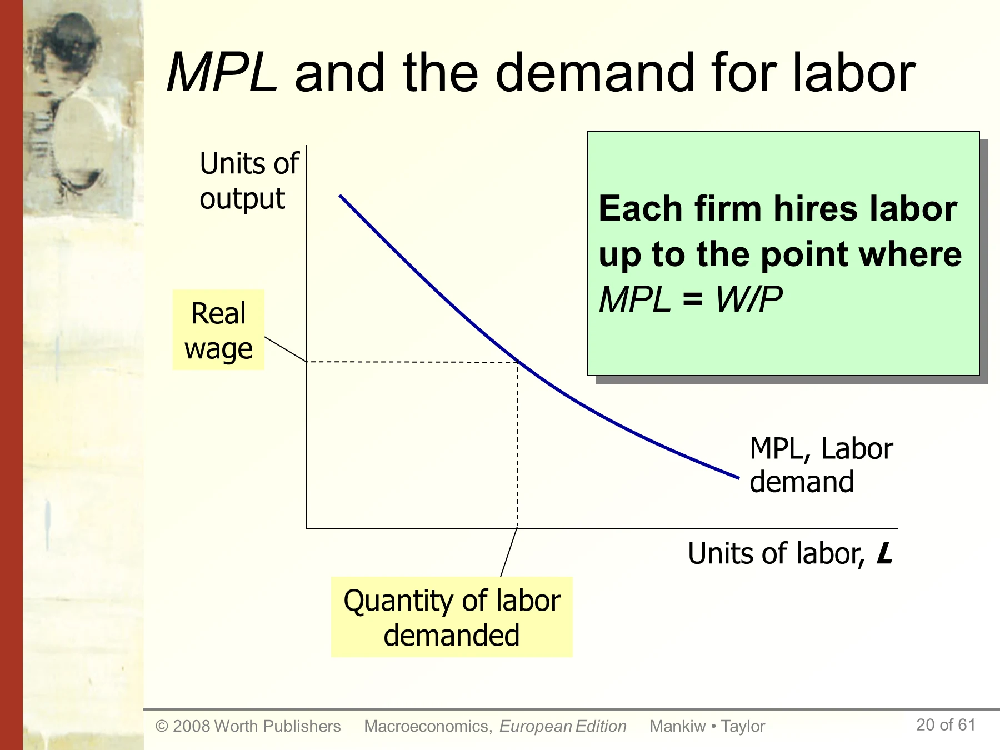
每家企业都把劳动雇到 MPL = W/P 为止。
图中 横轴为劳动数量 L，纵轴为实际工资（产出单位）。向下倾斜的曲线标注为「MPL，劳动需求」。给定实际工资水平，对应的曲线上的点决定「劳动需求量」。
为什么可以把一条技术曲线直接读成一条需求曲线？关键在于问对问题：需求曲线问的是"价格变了，数量怎么变"，而 MPL 曲线恰好给出了这个答案。
设想实际工资从高处往下走。工资很高时，只有最前面那几个工人值得雇，因为只有他们的 MPL 高于工资；工资降下来，越来越多的人变得"值"，雇工量就增加。价格与数量反向变动，这就是需求曲线的定义。而且这条曲线的位置由 MPL 决定，不是另画一条——劳动需求曲线就是 MPL 曲线本身，纵轴换个名字而已。
用反证法看得更清楚。设 L* 满足 MPL(L*) = W/P。若企业雇得比 L* 少，最后一个人的 MPL 高于工资，多雇一个能增加利润，所以没雇够；若雇得比 L* 多，最后一个人的 MPL 低于工资，裁掉一个能减少亏损，所以雇多了。只有 L = L* 时，两个方向都无利可图，企业停手。
这个论证依赖两条前提。一是边际产量递减，否则 MPL 曲线不向下倾斜，交点可能不唯一，甚至企业会想要无限大的规模。二是企业是价格接受者，否则多雇人本身会推高工资，比较的基准就不再是给定的 W/P。两条前提在本章都成立。
曲线什么时候会移动？凡是改变 MPL 的因素都会移动它。资本存量 K 增加，每个工人的设备变多，同样的人数能生产更多，整条 MPL 曲线右移，劳动需求增加；技术进步使 F 上移，同样如此。反过来，实际工资变化只是沿曲线移动，不移动曲线——这个区分在后面分析财政政策时很重要，因为赤字改变的是利率和资本积累，不是工资。
It's easy to see that the MPL curve is the firm's L demand curve. Let L* be the value of L such that MPL = W/P.
Suppose L < L*. Then, the benefit of hiring one more worker (MPL) exceeds the cost (W/P), so the firm can increase its profits by hiring one more worker.
Instead, suppose L > L*. Then, the benefit of the last worker hired (MPL) is less than the cost (W/P), so the firm should reduce labour to increase its profits.
When L = L*, then firm cannot increase its profits either by raising or lowering L. L is already at the optimal level. Hence, the firm hires L to the point where MPL = W/P. This establishes that the MPL curve is the firm's labour demand curve.
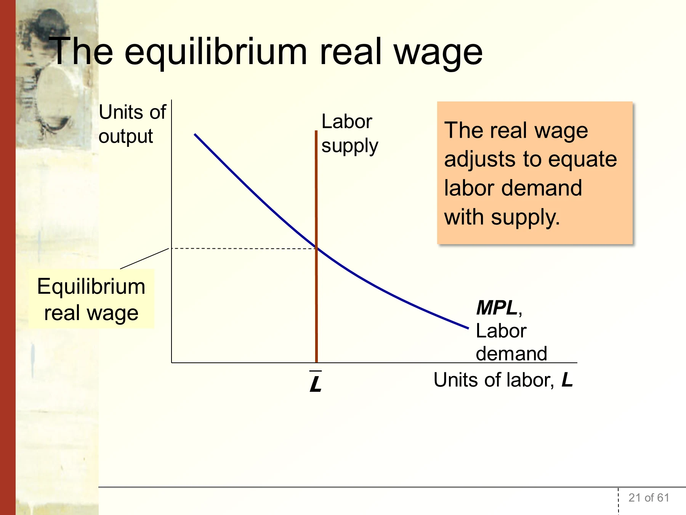
实际工资调整到使劳动需求等于劳动供给。
图中 横轴为劳动数量 L，纵轴为实际工资。垂直的「劳动供给」线位于 L̄；向下倾斜的「MPL，劳动需求」线与它相交，交点对应「均衡实际工资」。
需求曲线有了，供给曲线在这一章是一条垂线：无论工资高低，经济能提供的劳动就是 L̄。这个假设等于说劳动供给对实际工资完全不敏感，人既不会因为工资高而多加班，也不会因为工资低而退出劳动力市场。
两条线一交，实际工资就被定住了。它的高低完全取决于交点落在 MPL 曲线的哪个位置：均衡实际工资等于均衡就业量处的劳动边际产量。这句话把工资从"谈判的结果"变成了"技术的产物"——一个经济中工人的实际工资，取决于他们在生产中的边际贡献，而边际贡献又取决于人均资本和技术水平。
调整机制值得说清。如果实际工资暂时高于交点，企业想雇的人少于 L̄，出现超额劳动供给。在价格有弹性的假设下，工资会往下走，直到企业愿意雇满为止；工资低于交点则相反。整个过程里就业始终是 L̄，变动的只有工资。这就是为什么本章的模型里看不到失业：工资弹性把数量缺口吸收成了价格变动。
把这条结论与第 3-9 页接上：既然要素总是被雇满，产出就总是 Ȳ。供给面到此彻底封闭——产出是 Ȳ，实际工资是 MPL(L̄)，两者都不再随需求面变化。下一页对资本做完全相同的事。
垂直线是本章的简化。若劳动供给对工资有反应，供给曲线向上倾斜，交点仍存在，但工资与就业会同时调整，结论的方向不变。
The labor supply curve is vertical: We are assuming that the economy has a fixed quantity of labor, whether the real wage is high or low.
Combining this labor supply curve with the demand curve we've developed in previous slides shows how the real wage is determined.
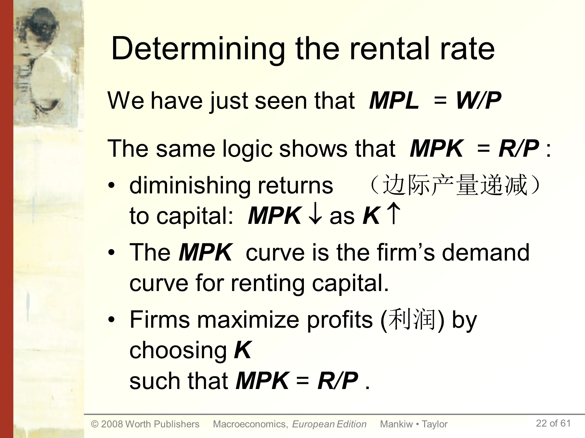
刚才看到 MPL = W/P
同样的逻辑表明 MPK = R/P：
企业通过选择使 MPK = R/P 的 K 来实现利润最大化。
把"劳动"两个字换成"资本"，上一节的每一句话都成立。多租一台机器，多付的实际成本是 R/P，多得的产出是 MPK；只要前者不超过后者，就继续租。于是资本也被租到 MPK = R/P 为止，MPK 曲线成了资本需求曲线，因为 MPK 随 K 增加而递减，价格与需求量反向变动。
这里有一个现实中的麻烦：很多企业用的是自己的机器，并不租。这时 R/P 还有意义吗？有，而且更重要——它是机会成本。企业把自有机器留给自己用，就等于放弃了把它租给别人能收的租金。只要市场租金高于这台机器在自己手里的边际产出，企业就应该把它租出去；反之则留用。所以无论租还是自有，决策的分界点都是 R/P。
还有一层：R/P 是一期的租金，不是买价。买一台机器要付出资产价格，这笔钱摊到每年，再加上折旧和利息，才折成租金。本章不展开这个折算，把 R/P 直接当作给定的资本使用价格，这就够用了。
注意 MPK 递减与 MPL 递减是同一个道理的两个方向：固定机器加人，人均机器变少；固定人加机器，每台机器配的人变少。两个方向的边际产量都递减，所以两条需求曲线都向下倾斜。
In our model, it's easiest to think of firms renting capital from households (the owners of all factors of production). R/P is the real cost of renting a unit of K for one period of time. In the real world, of course, many firms own some of their capital. But, for such a firm, the market rental rate is the opportunity cost of using its own capital instead of renting it to another firm. Hence, R/P is the relevant "price" in firms' capital demand decisions, whether firms own their capital or rent it.
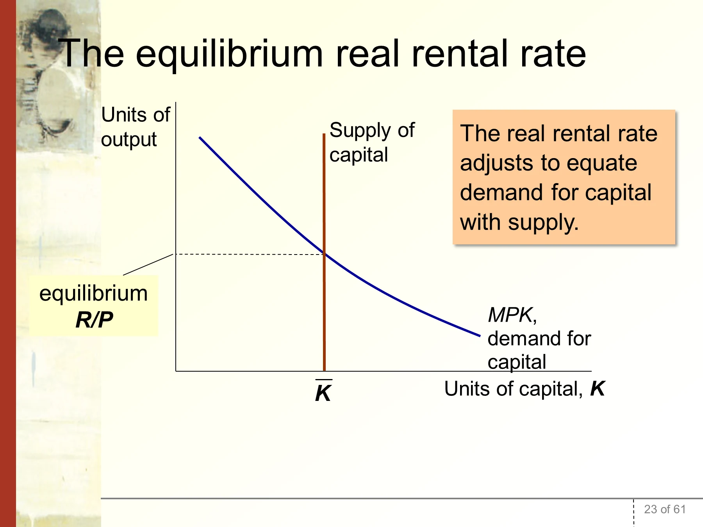
实际租赁价格调整到使资本需求等于资本供给。
图中 横轴为资本数量 K，纵轴为实际租赁价格（产出单位）。垂直的「资本供给」线位于 K̄；向下倾斜的「MPK，资本需求」线与它相交，交点对应「均衡 R/P」。
与劳动市场完全平行：资本供给固定在 K̄，是一条垂线；资本需求是向下倾斜的 MPK 曲线；交点决定 R/P。价格高于交点，机器供过于求，租金下降；低于交点，机器不够用，租金上升。
把两个市场并排看，会发现它们共用一个结构：固定的数量 + 递减的边际产量 = 由技术决定的要素价格。劳动市场给出 W/P，资本市场给出 R/P，两个价格一旦确定，国民收入如何在劳动和资本之间切分也就确定了。
这条垂线同样是本章的简化。真实经济中资本存量会随投资积累，租金也会影响投资意愿；但在本章的时间尺度内，K̄ 被视为给定，租金只起分配作用，不起积累作用。
The previous slide used the same logic behind the labor demand curve to assert that the capital demand curve is the same as the downward-sloping MPK curve. The supply of capital is fixed (by assumption), so the supply curve is vertical. The real rental rate (R/P) is determined by the intersection of the two curves.
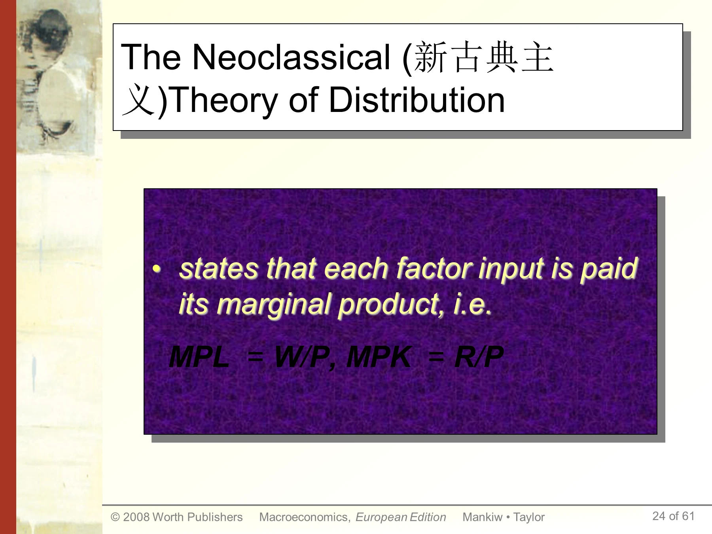
该理论指出，每种要素投入都按它的边际产品获得报酬，即
MPL = W/P MPK = R/P把前两节的结果并成一句话，就是新古典分配理论：每种要素按它的边际产品取得报酬。这句话在经济学史上分量很重，因为它把"收入分配"这个看起来属于社会学的问题，转成了"要素的边际生产率是多少"这个技术问题。
它依赖三个条件。市场是竞争性的，所以价格由供求而非谈判决定；企业追求利润最大化，所以雇到边际产品等于价格为止；生产函数规模收益不变，所以按边际产品付酬恰好付完，这一点下一页展开。三个条件缺一个，结论就要改：有工会时工资可能高于 MPL，有垄断时价格高于边际成本，规模收益递增时按 MPL 付酬会亏损。
这个理论解释的是功能性分配——劳动总收入与资本总收入的比例，不是张三和李四谁挣得多。后者还取决于每个人拥有多少劳动和资本，属于个人分配问题，本章最后几页会用基尼系数触及，但不展开。
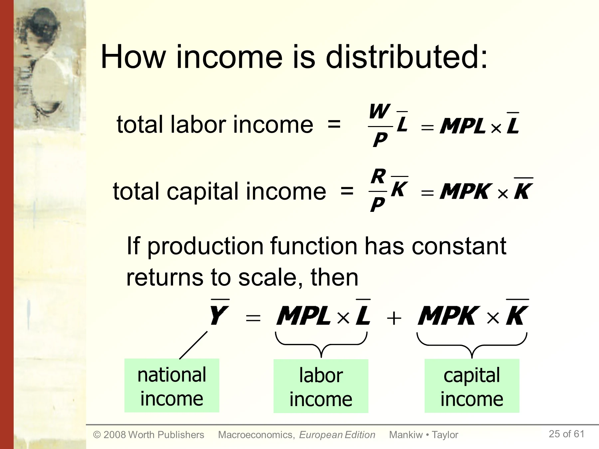
如果生产函数具有规模收益不变的性质，那么
Ȳ = MPL × L̄ + MPK × K̄图中 上式三项分别标注为「国民收入」「劳动收入」「资本收入」。
按边际产品付酬，会不会出现"付多了"或"付少了"的问题？十九世纪的经济学家为此争论了很久：如果每样要素都按自己的边际产品拿钱，所有要素拿到的加在一起，是否恰好等于总产出？如果加起来少于总产出，剩下的归谁；如果多于总产出，企业岂不是要亏本？
答案是：在规模收益不变的前提下，恰好分尽。这条结论叫欧拉定理，证明只需一步求导。
起点是规模收益不变的定义，它对任意 z 成立：
F (zK, zL) = z · F (K, L)把这个等式两边都对 z 求导。右边求导得 F(K,L)。左边要用链式法则：先对第一个自变量求偏导，再乘上第一个自变量对 z 的导数 K；第二项同理，乘上 L。
K · F₁ (zK, zL) + L · F₂ (zK, zL) = F (K, L)这个等式对一切 z 成立，特别地取 z = 1。注意 F₁ 就是对资本求偏导，即 MPK；F₂ 是对劳动求偏导，即 MPL。于是
K · MPK + L · MPL = F (K, L) = Y这正是要证的结论：资本收入加劳动收入等于国民收入，不多一分也不少一分。
这个证明值得慢慢过一遍，因为它同时给出了直觉。沿射线求导的意思是：把整个经济的规模按 z 放大一点点，产出增加多少。规模收益不变说产出的增加恰好是 Y 乘以 z 的增量；另一方面，规模放大时 K 增加 K·dz、L 增加 L·dz，每一份新增要素按自己的边际产品贡献产出，加起来就是 (K·MPK + L·MPL)·dz。两个算法算的是同一件事，令它们相等，定理就出来了。
反过来看，如果规模收益递增，那么 MPL·L + MPK·K > Y，按边际产品付酬会付出超过总产出的钱，企业亏损，这种分配方案无法维持；如果规模收益递减，则加起来小于 Y，会剩下一块谁也没拿到的剩余，通常归所有者，表现为利润。所以欧拉定理不是普遍真理，它是规模收益不变的推论。这也解释了为什么本章一开始要假设规模收益不变：它让"按贡献分配"在算术上自洽。
常见误读：以为欧拉定理说明分配是"公平"的。它只说明分配是加总自洽的，与公平无关。一个 MPL 很低的工人按 MPL 拿钱，可能不足以维生，这在算术上完全没问题。
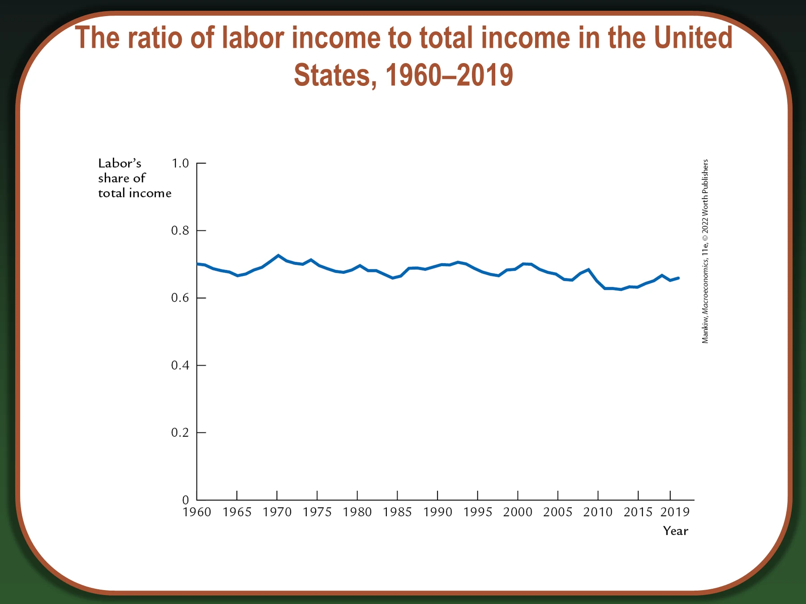
图中 横轴为年份（1960–2019），纵轴为「劳动占总收入的份额」（0–1.0）。曲线长期在 0.62–0.72 之间波动，1960 年约 0.70，1970 年前后接近 0.72，2010 年前后降到 0.62 左右，2019 年回升到 0.65 附近。
欧拉定理说两份收入加起来等于总产出，但没有说各占多少。份额是多少，得看数据。这张图给出的答案是：劳动收入长期占总收入的六成到七成，六十年里在 0.62 到 0.72 之间摆动，没有明显的趋势性上升或下降。
这种"大致不变"本身就是重要证据。如果生产函数是柯布-道格拉斯形式，劳动份额应当恒等于 1 − α，与 K、L、技术都无关。数据在六十年里横跨了技术革命、全球化、两次石油危机，份额却基本稳住，这为使用柯布-道格拉斯形式提供了经验支持。
也要看到图上的细节：份额从 1970 年的高点缓慢下滑到 2010 年前后的低点，降幅约 8 个百分点，之后又有所回升。这段下滑是近二十年讨论"资本拿走太多"的经验起点，下一页会给出几种解释。对本章的模型来说，这点波动可以被当作常数处理；对研究不平等的人来说，它正是要解释的对象。
口径问题：这里的分工收入统计把自雇者的收入做了归并处理，不同处理方法会让水平值差一两个百分点，但不影响"大致平稳"这个判断。
Similar graph appears in the textbook as Figure 3-5.
Available: https://fred.stlouisfed.org/series/LABSHPUSA156NRUG
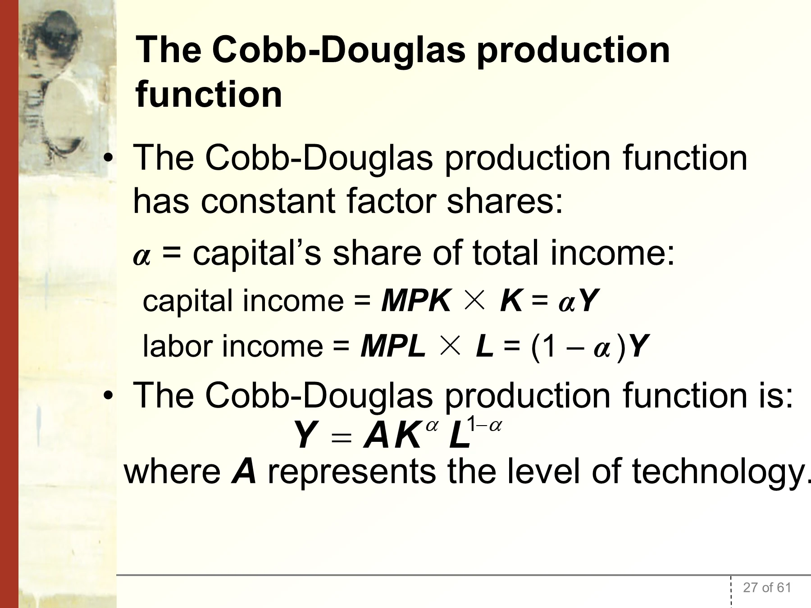
柯布-道格拉斯生产函数具有不变的要素份额：
α ＝ 资本占总收入的份额：
资本收入 = MPK × K = α Y 劳动收入 = MPL × L = (1 − α) Y柯布-道格拉斯生产函数为：
Y = A K^α L^(1−α)其中 A 代表技术水平。
上一页的数据说份额大致不变，现在要找一个能自动产生这个性质的生产函数。柯布-道格拉斯形式就是答案：
Y = A K^α L^(1−α)三个参数各有分工。A 是技术水平，它把整条函数按比例放大，A 翻倍则同样的投入产出翻倍。α 和 1−α 是两个指数，它们之和为 1，这个"和为 1"正是规模收益不变的代数表现：把 K、L 各乘 z，得 A (zK)^α (zL)^(1−α) = z^(α+1−α) · A K^α L^(1−α) = z Y，z 的指数恰好是 1。
α 的经济含义是资本收入份额。这不是额外假设，而是可以从函数推出来的结果，下一页会做这个推导。现在可以先记住它的量级：美国的 α 大约在 1/3 左右，因为劳动份额约 0.65，剩下三分之一归资本。这个数字在增长理论、税收分析里会反复出现。
这个函数为什么好用？一是它同时具备规模收益不变和边际产量递减两条性质；二是份额恒定，做长期比较时不必逐年重算；三是取对数后变成线性式 ln Y = ln A + α ln K + (1−α) ln L，可以直接拿数据回归。三条加起来，使它成为宏观里最常用的生产函数形式。
把指数从 α、1−α 换成一般形式 α、β，就得到 Y = A K^α L^β。这时规模收益由 α + β 与 1 的比较决定：大于 1 递增，小于 1 递减。柯布-道格拉斯把 β 取成 1−α，就是为了直接钉住不变，省掉每次判断的麻烦。
不要把 α 读成"资本的重要性"。它只衡量资本在收入中的份额。一个 α 很小的经济，资本仍然可能是增长的瓶颈，两者不是一回事。
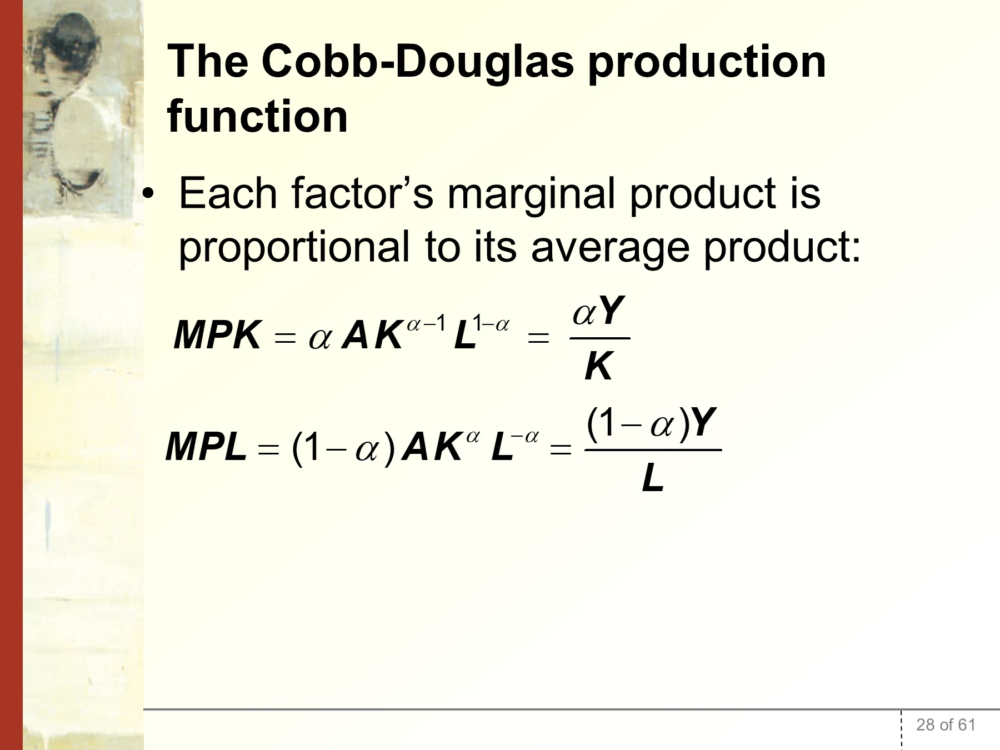
每种要素的边际产量与它的平均产量成比例：
MPK = α A K^(α−1) L^(1−α) = α Y / K MPL = (1 − α) A K^α L^(−α) = (1 − α) Y / L上一页说 α 是资本份额，这一页把这个说法算出来。
先求 MPK。对 K 求偏导时，L 视为常数，只有 K^α 这一项在变，用幂函数求导法则 d(K^α)/dK = α K^(α−1)：
MPK = A L^(1−α) · α K^(α−1) = α · (A K^α L^(1−α)) / K = α Y / K中间那一步是把 K^(α−1) 拆成 K^α / K，再把 K^α 与前面的 A、L 拼回 Y。同样的做法对 L：
MPL = A K^α · (1−α) L^(−α) = (1−α) · Y / L两个结果的形式完全对称，含义也很清楚：边际产量等于份额乘以平均产量。资本的平均产量是 Y/K，它的边际产量是这个平均产量的 α 倍；劳动的平均产量是 Y/L，边际产量是它的 1−α 倍。这解释了为什么柯布-道格拉斯函数下份额恒定：边际产量与平均产量始终同比例，要素增加时两者一起下降，比值不动。
现在验证欧拉定理。把两个边际产量代进去：
MPK × K + MPL × L = (α Y / K) · K + ((1−α) Y / L) · L = α Y + (1−α) Y = YK 和 L 都约掉了，剩下 α + (1−α) = 1，恰好等于 Y。第 3-25 页那条一般性定理，在这个具体函数上得到了直接验证。
还可以顺手看出边际产量递减：MPK 对 K 求导得 α(α−1) Y / K²，因为 α < 1，这个导数为负。递减不是假设出来的，是从函数形式里长出来的，指数小于 1 就保证了这一点。
These formulas can be derived with basic calculus and algebra.
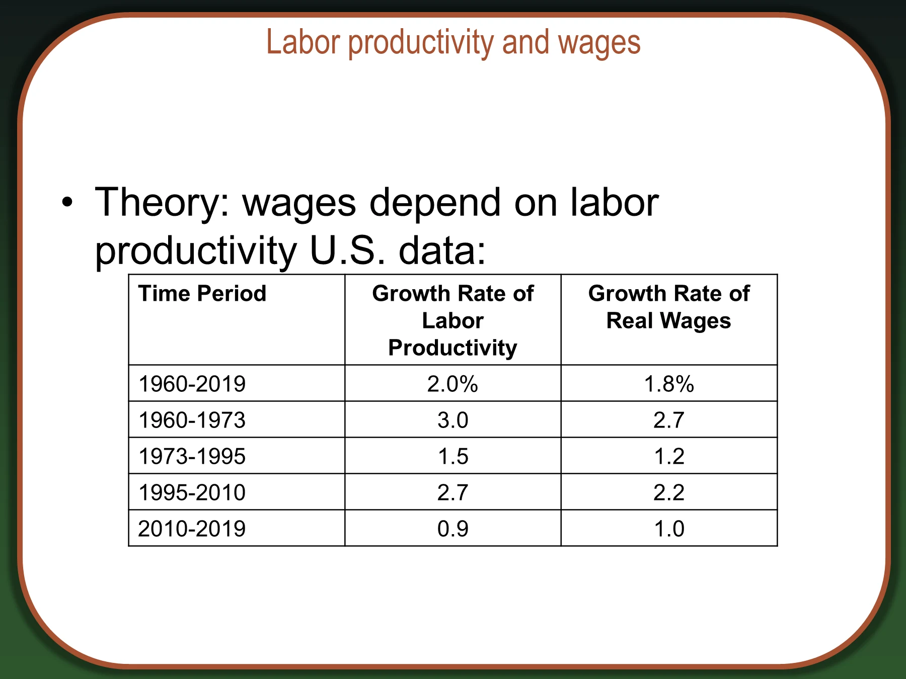
理论：工资取决于劳动生产率。美国数据：
| 时期 | 劳动生产率增长率 | 实际工资增长率 |
|---|---|---|
| 1960–2019 | 2.0% | 1.8% |
| 1960–1973 | 3.0 | 2.7 |
| 1973–1995 | 1.5 | 1.2 |
| 1995–2010 | 2.7 | 2.2 |
| 2010–2019 | 0.9 | 1.0 |
模型给出一个可以检验的预言：实际工资等于劳动的边际产量，而边际产量随劳动生产率同向变动，所以工资的增长应当跟着生产率的增长走。表格就是对这个预言的检验。
看行与行之间的变化，而不是只看全期平均。生产率增长 3.0% 的 1960–1973 年，工资增长 2.7%；生产率降到 1.5% 的 1973–1995 年，工资跟着降到 1.2%；生产率回升到 2.7% 的 1995–2010 年，工资回到 2.2%。三个阶段的排序完全一致，这是相当强的支持。
但两个序列并不相等，工资增长始终略低于生产率增长，全期差 0.2 个百分点。累积几十年，这个差额会变成不小的缺口。可能的解释包括劳动收入份额的缓慢下降、工资统计只覆盖部分报酬（股权激励、雇主缴纳的保险不在其中）、以及价格指数选择带来的度量差异。模型没有这些细节，所以它预言"同向且大致同幅"，数据给出"同向但略低"。
最后一行是个例外：2010–2019 年工资增长 1.0%，略高于生产率的 0.9%。生产率增速降到不足 1%，是战后最低的一段，这个"新常态"本身比工资与生产率的细微差异更值得注意。
The table shows the average annual rates of productivity and real wage growth in each time period. While not equal, the two series are very highly correlated.
Except, because these are growth rate, the overall difference between productivity and wages could be large now. This potential uncoupling of productivity growth and wages can be discussed, but is beyond the scope of the textbook. The final row, 2010–2019, shows the "new normal".
Source: U.S. Department of Labor
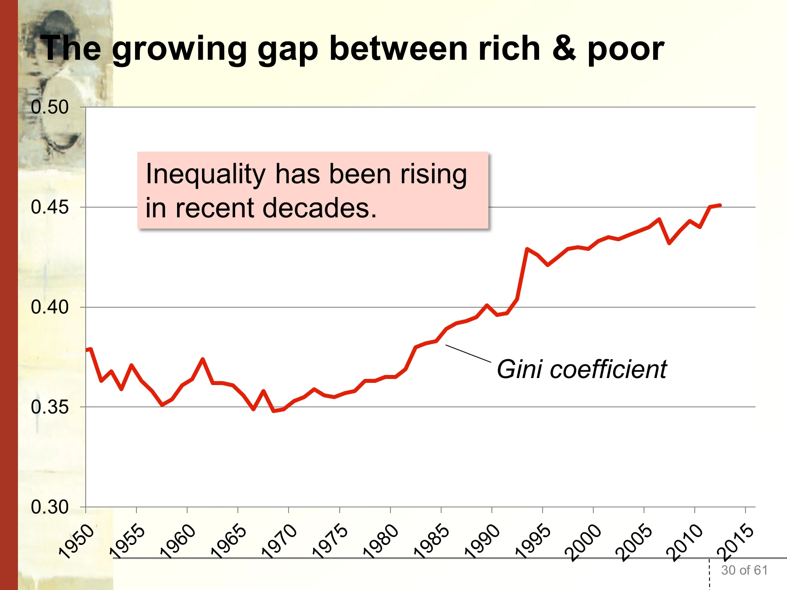
近几十年来不平等程度在上升。
图中 横轴为年份（1950–2015），纵轴为基尼系数（0.30–0.50）。曲线 1950 年约 0.375，1960 年代末降到 0.35 附近，此后持续上行，1990 年代初突破 0.40，2015 年达到约 0.45。
基尼系数把整条收入分布压成一个数：0 表示人人收入相同，1 表示全部收入归一个人。它衡量的是个人之间的差距，与前几页讨论的功能性分配（劳动与资本各拿多少）是两个不同层面的事。功能性分配可以完全不变，个人差距照样扩大——只要资本所有权越来越集中。
图上的走势分两段。1950 到 1970 年前后，系数从 0.375 降到 0.35，略有改善；1970 年代之后一路向上，1990 年代初越过 0.40，2015 年接近 0.45。四十五年间上升约 0.10，在基尼系数这个尺度上是很大的变化。
本章的模型解释不了这条曲线。模型里只有两类人——工人和资本所有者，每人拿到的都是自己的边际产品，没有个体差异，也没有基尼系数的位置。要解释图上这段上升，需要引入技能差异、技术偏向、婚姻匹配这些模型外的因素，下一页列出三条主要线索。
This slide and the one that follows corresponds to new material in the 9th edition. The Gini coefficient is a popular measure of inequality. A value of 0 would mean perfect equality, while a value of 1 would mean that one person has all the income.
Source: Same as the textbook.
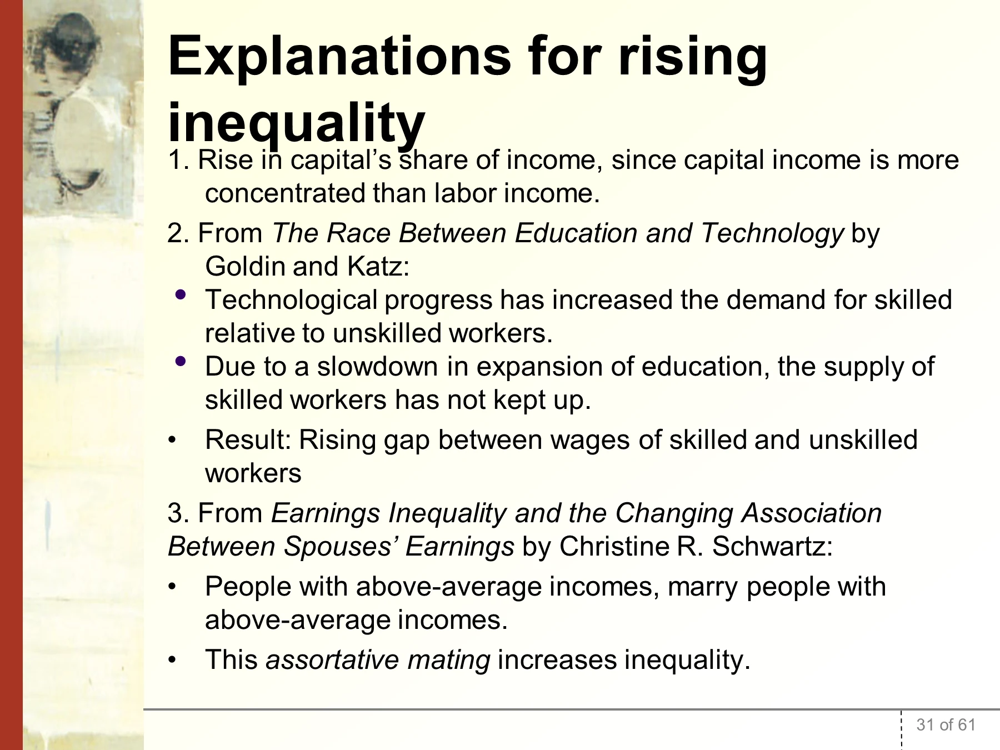
1. 资本收入份额上升，因为资本收入比劳动收入更集中。
2. 来自 Goldin 与 Katz 的《教育与技术的赛跑》：
结果：技能工人与非技能工人的工资差距扩大。
3. 来自 Christine R. Schwartz 关于收入不平等与配偶收入关联变化的研究：
三条解释分别作用在分配链条的不同环节，可以同时成立。
第一条走的是功能性分配那条线。如果 α 上升，资本收入占比变大，而资本所有权在人群中高度集中——少数人持有大部分股票和房产——那么总收入中流向少数人的部分就变多，个人之间的基尼系数随之上升。这条解释的关键不在份额变了多少，而在份额变化乘以所有权的集中度。
第二条走的是技能溢价那条线。技术进步并不是中性的，它更像是替代重复性劳动、补充抽象与沟通能力，于是对技能工人的相对需求上升。如果技能工人的供给同步扩张，相对工资可以保持不变；但 1980 年代以后高等教育扩张放缓，供给曲线没跟上需求曲线，技能溢价就被推高。Goldin 与 Katz 把这个过程概括成"教育跑得够不够快"，落点在需求与供给的相对速度，不是任何一方的绝对水平。
第三条走的是家庭形成那条线。收入分布在个人层面可能没怎么变，但婚姻把两个高收入者配到一起、两个低收入者配到一起，家庭层面的分布就比个人层面更分散。这是一种纯粹的组合效应：不改变任何人的工资，只改变工资被加总的方式。
三条解释对应三种不同的政策含义：第一条指向资本税制，第二条指向教育投入，第三条几乎无政策可施。模型本身无法在三者之间做裁判，它只能提供一个记账框架，让每种机制的作用位置清楚。
This slide and the one that follows corresponds to new material in the 9th edition.
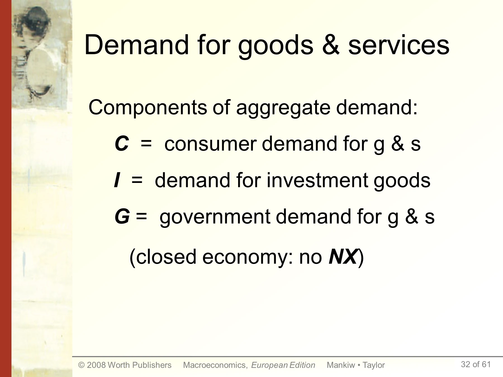
总需求的组成部分：
封闭经济：没有净出口 NX。
供给面已经封口：产出是 Ȳ，工资和租金由边际产量定住。现在转到另一侧——这固定的产出被谁买走。
在封闭经济里只有三类购买者。居民买消费品，企业买投资品，政府买自己需要的东西。没有第四类，因为没有外国人了；也没有存货变动这一项，因为模型假设市场出清，生产出来的东西全部被买走，不会积压。
接下来三页逐个给出这三项的行为方程。写法上有个共同点：每一项都只依赖很少的几个变量。C 只依赖可支配收入，I 只依赖实际利率，G 被当作外生。这种"每项只挂一个变量"的写法是刻意的简化，目的是让后面的均衡条件里只剩一个未知数 r。
"g & s" is short for "goods & services".
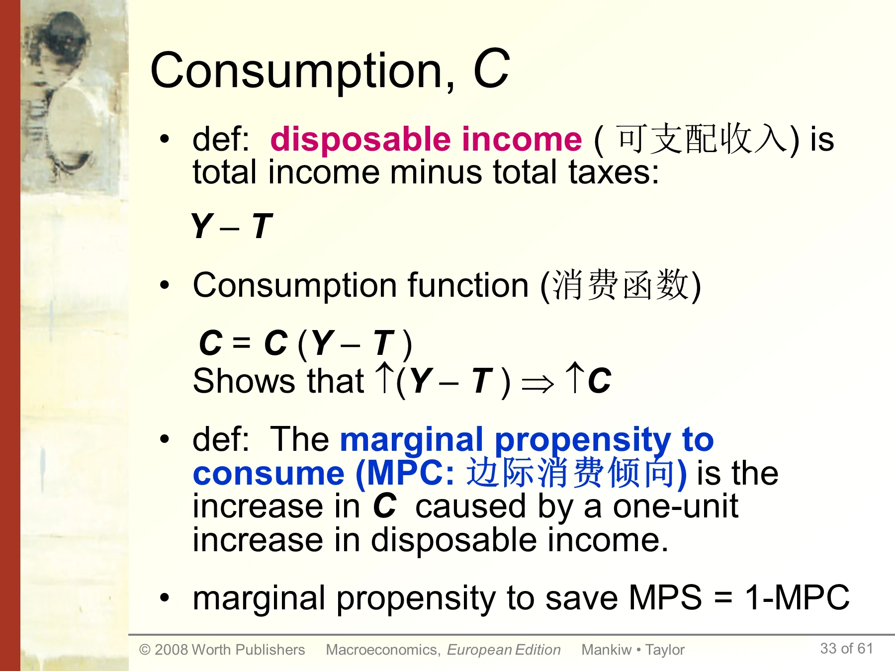
定义：可支配收入是总收入减去总税收：
Y − T消费函数
C = C (Y − T)它表明 (Y − T) 增加会导致 C 增加。
定义：边际消费倾向（MPC）是可支配收入每增加一单位所引起的 C 的增加。
MPS = 1 − MPC消费是总需求中最大的一块，通常占三分之二左右，所以它的行为方程决定了很多结论。
第一个决定：消费取决于可支配收入，不是总收入。理由很直接——家庭拿到收入后先交税，剩下的才是自己能支配的。一百元的收入如果伴随三十元的税，可支配收入只增加七十元，消费的反应也只能基于这七十元。把 T 写进括号里，就把税收对消费的抑制作用内建进了模型。
第二个决定：函数是递增的，即收入多了消费也多。这几乎不需要论证，但它是后面所有乘数式分析的起点。第三个决定更重要：MPC 介于 0 与 1 之间。收入每多一元，消费增加不到一元，剩下的部分变成储蓄。若 MPC 大于 1，多出来的收入会引发更多的消费支出，系统会不稳定；若 MPC 小于 0，收入增加反而减少消费，同样不合常理。MPC 在 0 与 1 之间，是"消费平滑"这个行为特征的最低要求。
与之配套的是 MPS ＝ 1 − MPC：多出的一元要么花掉要么存下，没有第三条路。这个恒等式在后面算储蓄变化时会直接用上，因为储蓄的变化可以写成 ΔS = ΔY − ΔC − ΔG，其中 ΔC 又等于 MPC 乘以可支配收入的变化。
这个函数里没有实际利率。也就是说，本模型假设利率不影响消费决策——只影响储蓄的形式（存银行还是买债券），不影响储蓄的数量。这个假设在第 3-59 页会被放松，那时储蓄曲线不再垂直，赤字分析的结论会跟着变。记住这一页的这个省略，它是后面那个对照实验的关键。
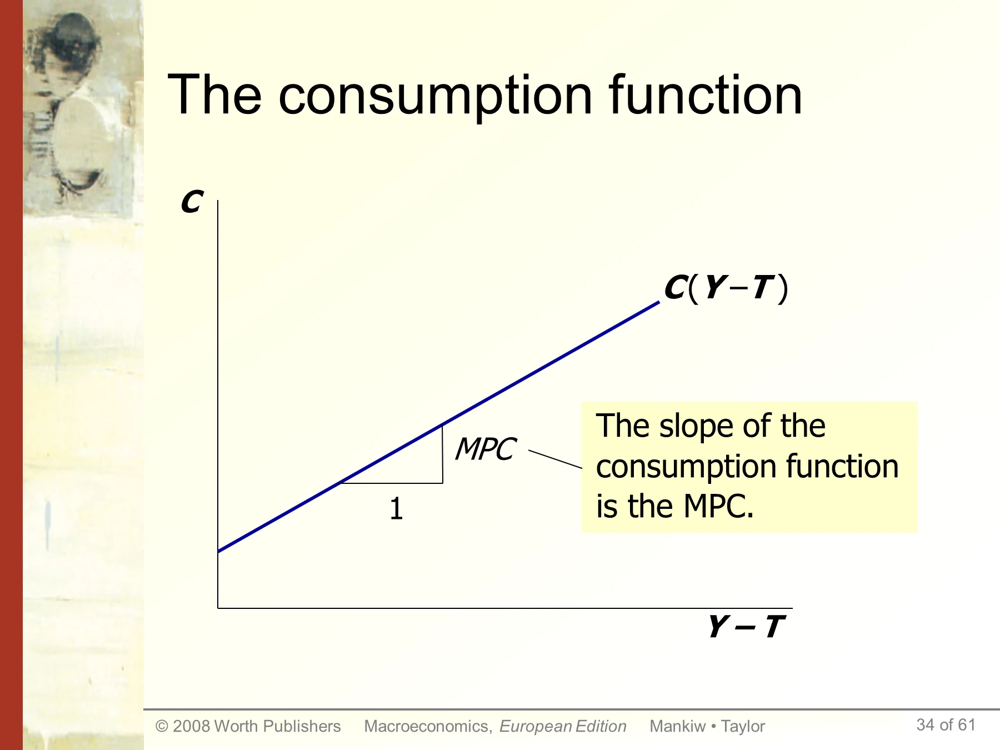
图中 横轴为可支配收入 (Y − T)，纵轴为消费 C。一条向右上方倾斜的直线标注为 C(Y − T)，其斜率标注为「MPC」。直线不经过原点，在纵轴上有正的截距。
消费函数的斜率就是 MPC。
把上一页的函数画出来，横轴是 Y − T，纵轴是 C。斜率就是 MPC：横轴每走一格，纵轴上升多少。因为 MPC 小于 1，这条线比 45 度线平缓；如果画出 45 度线作参照，消费线始终在它下方，两者之间的垂直距离就是储蓄。
纵轴上的正截距对应"可支配收入为零时仍要消费"。这部分支出靠什么支撑？模型里没有明说，可以是过去的储蓄，也可以是借债。把它画成正截距，是为了让函数在低收入区间仍然合理；本章的分析集中在截距右侧的正常区间，截距的具体数值不影响任何结论。
直线形式是简化。真实的消费函数可能弯曲——收入很低时几乎全部花掉，收入很高时储蓄比例上升。但在本章关注的范围内，用一条直线近似足够，而且只有直线才能让后面的代数保持线性。
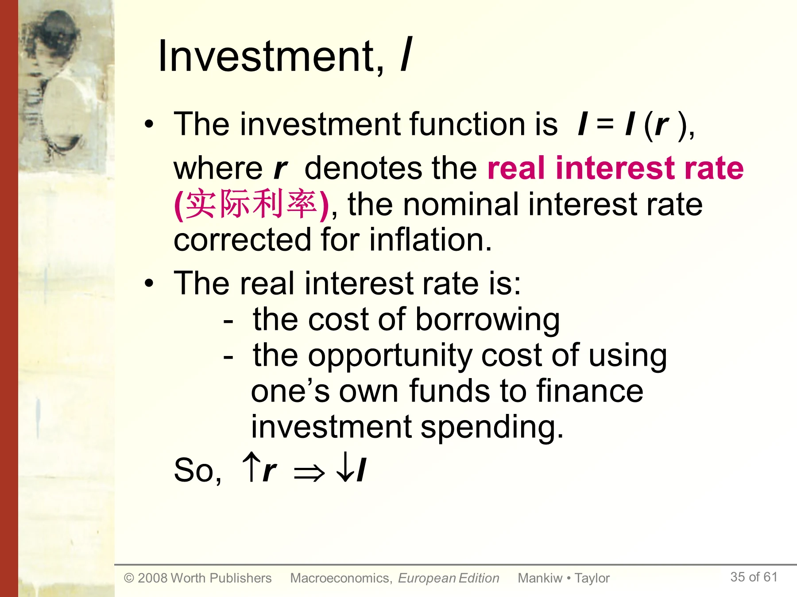
投资函数是
I = I (r)其中 r 表示实际利率，即经过通货膨胀修正后的名义利率。
实际利率是：
因此，r 上升会导致 I 下降。
投资是三项里唯一对利率敏感的一项，这个敏感性支撑了整章的政策分析。
为什么是实际利率而不是名义利率？因为投资决策比较的是实物：买一台机器，明年多产出若干单位产品，卖掉能换回多少钱，取决于届时的物价；借钱的利息也是按届时货币支付的。两边都是货币，通胀会同时抬高分子分母，只有扣掉通胀之后的实际利率才反映真实的代价。第 5 章会把这一层讲成费雪方程，这里先接受这个结论。
实际利率在两个位置上起作用。企业借钱买设备，r 是借入成本：r 越高，每年要还的利息越多，项目的净现值越低，能通过门槛的项目越少。企业用自有利润买设备，r 是机会成本：这笔钱不投资，可以存银行或买债券拿到 r，投资等于放弃了这份回报。两条路径给出同一个结论，所以不必区分资金来源，投资函数只写 r 一个自变量。
这就是为什么投资对利率的敏感度是货币政策发挥作用的关键环节。利率一变，投资跟着变，总需求跟着变，产出跟着变。如果投资对利率不敏感，这条传导链就断了。本章只讨论 r 由储蓄与投资共同决定，政策如何影响 r 留到后面。
这里的 I 是固定投资与住房投资，不含存货变动，也不含金融意义上的"投资"（买股票、买债券）。后者只是资产的转手，不创造新的资本品。
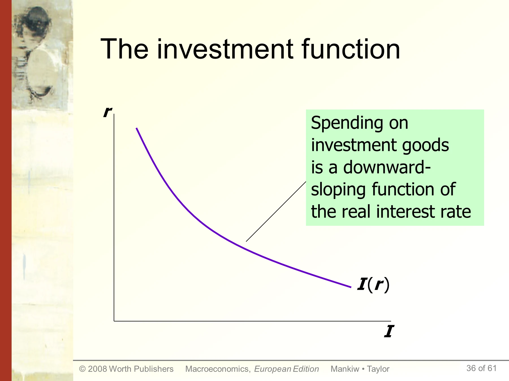
投资品支出是实际利率的向下倾斜函数。
图中 横轴为投资 I，纵轴为实际利率 r。一条向右下方倾斜的曲线标注为 I(r)。
注意这张图的坐标轴方向与通常的供求图不同：纵轴是价格 r，横轴是数量 I，这与把 r 当作"资金的价格"来处理是一致的。曲线向下倾斜，表示利率越高，愿意上的项目越少。
曲线的位置由技术、预期、税收等决定，只有 r 变化才是沿曲线移动。这一点在 3-57、3-58 两页会用到：技术创新把整条曲线右移，而利率变化只是让均衡点沿曲线滑动。
曲线的陡峭程度也有经济含义。曲线越平，投资对利率越敏感，同样的利率变动引起更大的投资变动，后面的财政政策效果也越强。本章不讨论这个斜率的大小，把它当作给定的形状。
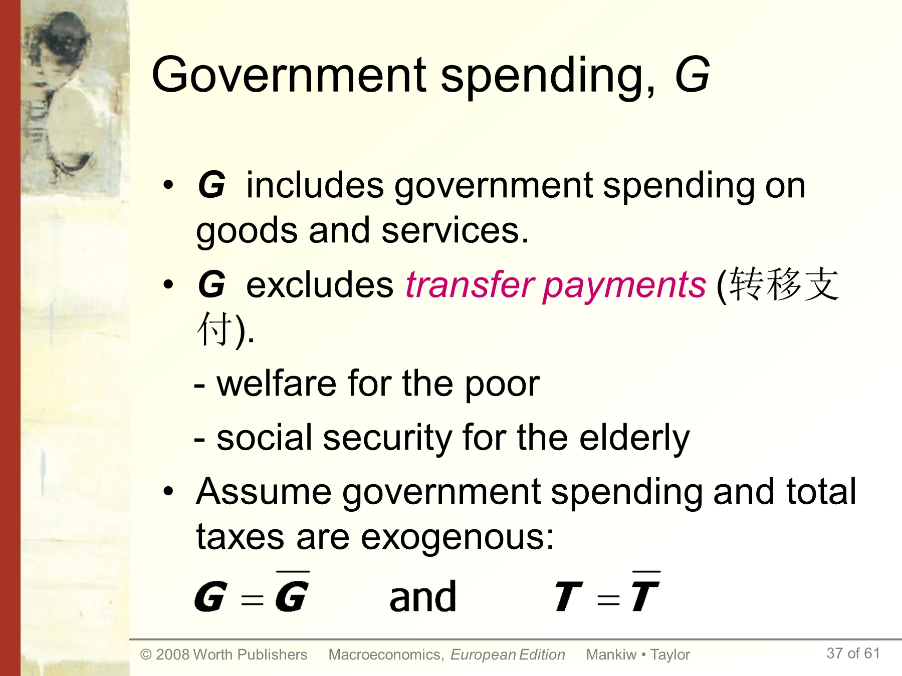
G 包括政府对产品与服务的支出。
G 不包括转移支付。
假设政府购买与总税收都是外生的：
G = Ḡ T = T̄政府支出有两类，模型只把其中一类算进 G。买战斗机、修公路、付公务员薪水，这些是政府直接购买产品与服务，计入 G。发低保、发养老金，这些是转移支付：钱到了居民手里，政府并没有买走任何东西，居民拿它去消费时才形成对产品的需求。
如果把转移支付也算进 G，同一笔钱会被计两次——一次在 G 里，一次在居民消费里。所以转移支付被放在 C 的背后，通过可支配收入起作用：转移支付增加，T 实际上减少了，Y − T 上升，C 上升。这也解释了为什么减税和增加转移支付在模型里是同一类操作，都属于"改变 T"。
把 G 和 T 设为外生，等于说政府的收支不随经济状况自动调整。现实中有自动稳定器——衰退时税收自动减少、失业救济自动增加——那会让 T 成为 Y 的函数。本章不用这个设定，为的是把政府行为当作纯粹的外生冲击，好观察它单独引起什么后果。
Transfer payments are included in C and I.
总需求：
C (Ȳ − T̄) + I (r) + Ḡ总供给：
Ȳ = F (K̄ , L̄)均衡：
Ȳ = C (Ȳ − T̄) + I (r) + Ḡ三条式子放在一起，模型的骨架就完整了。总供给是 Ȳ，由要素和技术决定，是一个常数。总需求是三项之和，其中 C 由 Ȳ − T̄ 定住，G 由 Ḡ 定住，只有 I 里的 r 还没定。于是均衡条件变成一条只含一个未知数的方程。
把已知量归拢一下会更清楚。定义 C̄ = C(Ȳ − T̄)，它也是常数。均衡条件于是写成
Ȳ = C̄ + I (r) + Ḡ左边不动，右边只有 I(r) 会随 r 变。这就回答了"什么让供求相等"：实际利率是唯一的内生变量。r 上升，I 下降，总需求下降；r 下降，I 上升，总需求上升。总有一个 r 让右边恰好等于 Ȳ，因为 I(r) 可以从很大一路降到很小。
为什么偏偏是利率承担这个角色，而不是价格水平或工资？因为价格和工资已经在供给面用掉了——它们被用来保证要素被雇满、产出等于 Ȳ。一个方程只能解一个未知数，价格已经解过一次，剩下的位置留给 r。
这个设定有一个可以检验的含义：财政政策改变 r，从而改变 I，但不改变 Y。G 增加时，右边变大，为了让等式恢复，I 必须减少，也就是 r 必须上升。产出不动，投资被政府买走了一部分。这就是挤出的全部逻辑，第 3-55 页会用图形走一遍。
Note that the only variable in the equilibrium condition that doesn't have a "bar" over it is the real interest rate.
When the full slide is showing, before you advance to the next one, you might want to note that the interest rate is important in financial markets as well, so we will next develop a simple model of the financial system.
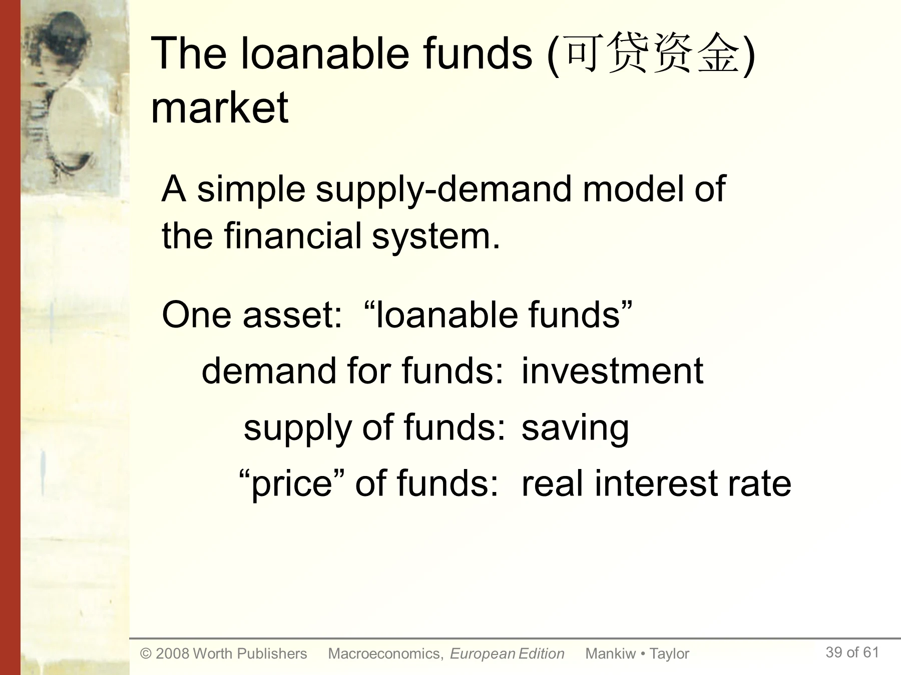
金融体系的一个简单供求模型。
只有一种资产：「可贷资金」
产品市场的均衡条件里，r 是一个抽象的价格。要看清它怎么被定出来，最好换一个市场来看——把"资金"当作一种商品，看它的供求。
这个市场的设定极简：只有一种资产，叫可贷资金；买方是投资的企业和买房的家户，卖方是储蓄的家户和政府；价格是实际利率。现实中的金融体系有股票、债券、贷款、存款无数种工具，这里全部压缩成"借钱"一件事。这样做的代价是看不到期限结构和风险溢价，收益是能用一张供求图说清利率的决定。
为什么把投资叫"需求"、储蓄叫"供给"？因为借钱的人是在使用资金，存钱的人是在提供资金。企业发债筹资买设备，是在资金市场上出价；家户存款买债，是在资金市场上供货。价格就是使用这笔资金的代价，也就是利率。
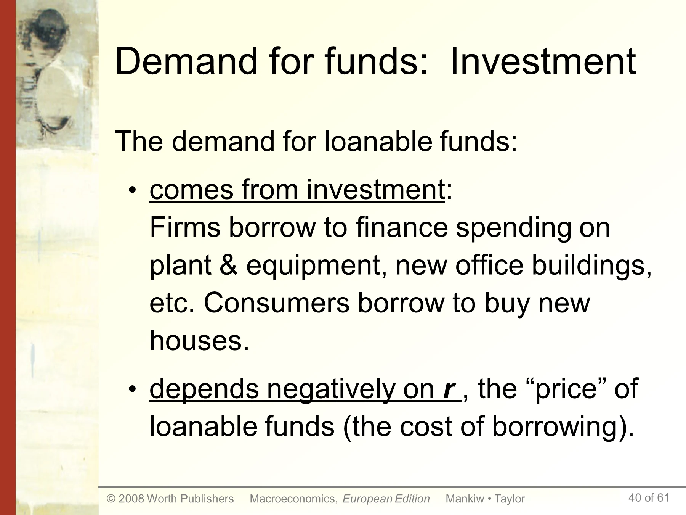
对可贷资金的需求：
把投资重新解释成"对资金的需求"，只是换了一个说法：想买设备的企业，必须先拿到钱。它可以直接发债，可以向银行借，也可以动用留存收益——最后这一种看似不用借钱，但动用的钱本来可以借给别人，机会成本同样是 r。所以三种融资方式在模型里等价。
需求曲线向下倾斜的理由，与上一页投资函数完全相同：r 是借钱的价格，价格越高，愿意借的人越少。这里不需要新的论证，只需要承认"投资支出"与"资金需求"是同一件事的两种称呼。
住房投资也算在里面。家户贷款买房，在国民经济核算里算投资而不是消费，因为房子是能长期提供服务的资本品。这一点常被忽略：房地产市场的按揭利率，直接就是可贷资金价格的一部分。
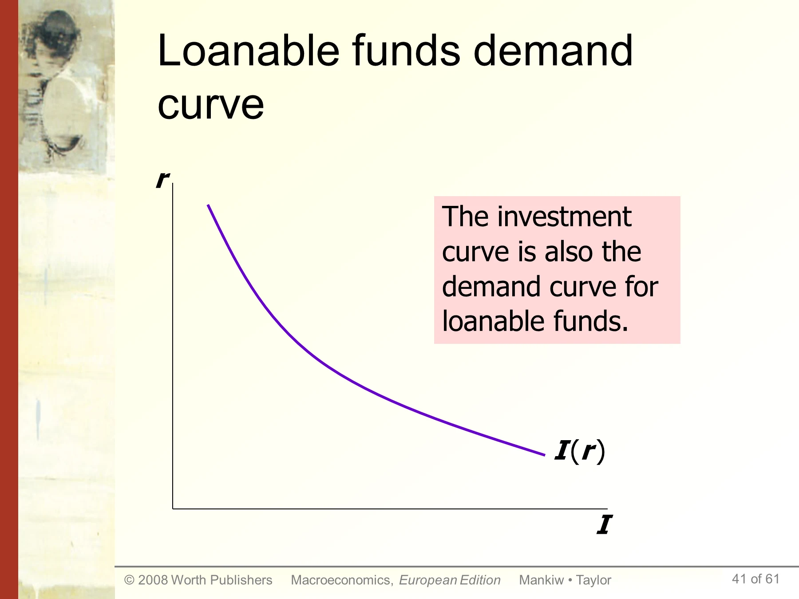
投资曲线同时也是可贷资金的需求曲线。
图中 横轴为可贷资金数量（S, I），纵轴为实际利率 r。一条向右下方倾斜的曲线标注为 I(r)。
这张图与 3-36 页的投资函数图是同一张，只是横轴的标签从"投资"换成了"可贷资金"。这不是两张图，是同一关系的两种读法：横轴读作投资量时，它讲的是企业想买多少设备；读作资金量时，它讲的是企业想借多少钱。两者数值相等，因为每一元投资都需要一元融资。
所以后面讨论可贷资金市场时，不必重新推导需求曲线，直接沿用投资函数即可。
可贷资金的供给来自储蓄：
供给一侧的主体是家户。家户把没有消费掉的那部分收入存进银行、买成债券或基金，这些钱经过金融体系转手，变成企业可以借的资金。这个转手过程不是自动的：金融体系要能把千百万家户的小额资金汇集起来，评估借款人的项目，分散风险，把期限错配处理好。金融体系越有效，同样的储蓄能支撑的投资越多。
政府也可以是供给者。税收大于支出时，政府有预算盈余，这笔钱不必花掉，可以存入银行或偿还债务，同样进入资金池。反过来，政府赤字就是从池子里取水，是负的供给。
这里有一个容易被忽略的对应关系：家户存钱的行为，在国民核算里就是"收入减消费"；政府存钱的行为，就是"税收减支出"。两者加起来正好是国民储蓄，也就是这个市场上的总供给。下一页把这个加法写出来。
Here you might take some time to explain how resources can be channelled into investment via financial markets. Effective financial markets enable the pooling of resources from millions of households, risk-sharing and constitute a source of funding for possibly large private and public investments. Another role performed by financial markets is to facilitate the dissemination and aggregation of information on investment projects and their opportunity costs.
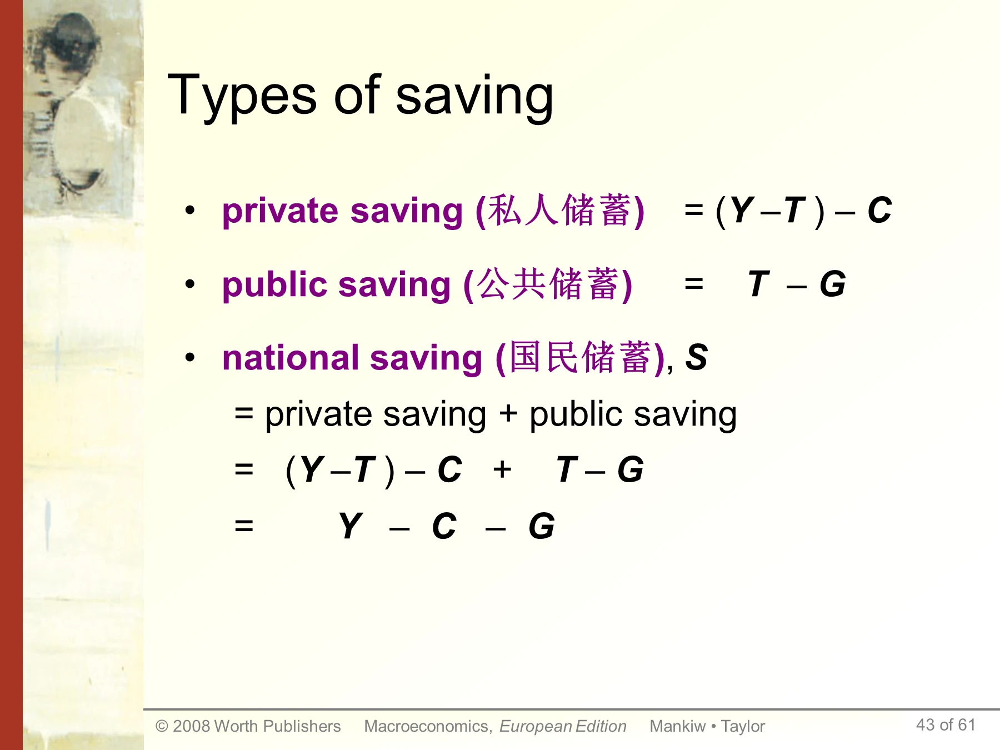
国民储蓄，S
= 私人储蓄 + 公共储蓄 = [(Y − T) − C] + [T − G] = Y − C − G三个口径，逐层化简，最后得到一个很干净的表达式。
私人储蓄是家户部门存下的钱：拿到可支配收入 Y − T，花掉 C，剩下 (Y − T) − C。这个"剩下"不是躺在抽屉里，而是变成了银行存款、债券、股票——总之进入了资金市场。公共储蓄是政府存下的钱：收税 T，花掉 G，剩下 T − G。它可以为正（盈余），也可以为负（赤字）。
两者相加就是国民储蓄。关键在于中间那一步化简：
(Y − T − C) + (T − G) = Y − C − GT 一正一负，抵消了。这个抵消不是代数游戏，它说明了一件实质的事：税收只是把钱从家户转移到政府，不改变国民储蓄的总量。给定 Y、C、G，T 是高是低，只影响储蓄在私人部门和公共部门之间怎么分，不影响总量。减税而不减支出，私人储蓄增加的部分恰好等于公共储蓄减少的部分。
化简后的 S = Y − C − G 还有一个更要紧的性质：右边三项里没有 r。Y 是 Ȳ，G 是 Ḡ，C 由 Ȳ − T̄ 定住，全都不含 r。所以国民储蓄不随利率变化。这就是下一页那条垂直供给曲线的来源——不是因为假设了垂直，而是因为这个式子算出来就是与 r 无关。
这个结论依赖于前面那个省略：消费函数里没有 r。如果储蓄对利率有反应，C 就要写成 C(Y − T, r)，S 也就跟着依赖 r，供给曲线会向上倾斜。第 3-59 页会把这一条放松，届时赤字的后果会明显不同。
After showing definition of private saving, give the interpretation of the equation: private saving is disposable income minus consumption spending; explain why private saving is part of the supply of loanable funds: Suppose a person earns €50,000/year, pays €10,000 in taxes, and spends €35,000 on goods and services. There's €5000 remaining. What happens to that €5000? The person might use it to buy stocks or bonds, or she might put it in her savings account or money market deposit account. In all of these cases, this €5000 becomes part of the supply of loanable funds in the financial system.
After displaying public saving, explain the equation's interpretation: public saving is tax revenue minus government spending. Notice the analogy to private saving – both concepts represent income less spending: for the private household, income is (Y-T) and spending is C. For the government, income is T and spending is G.
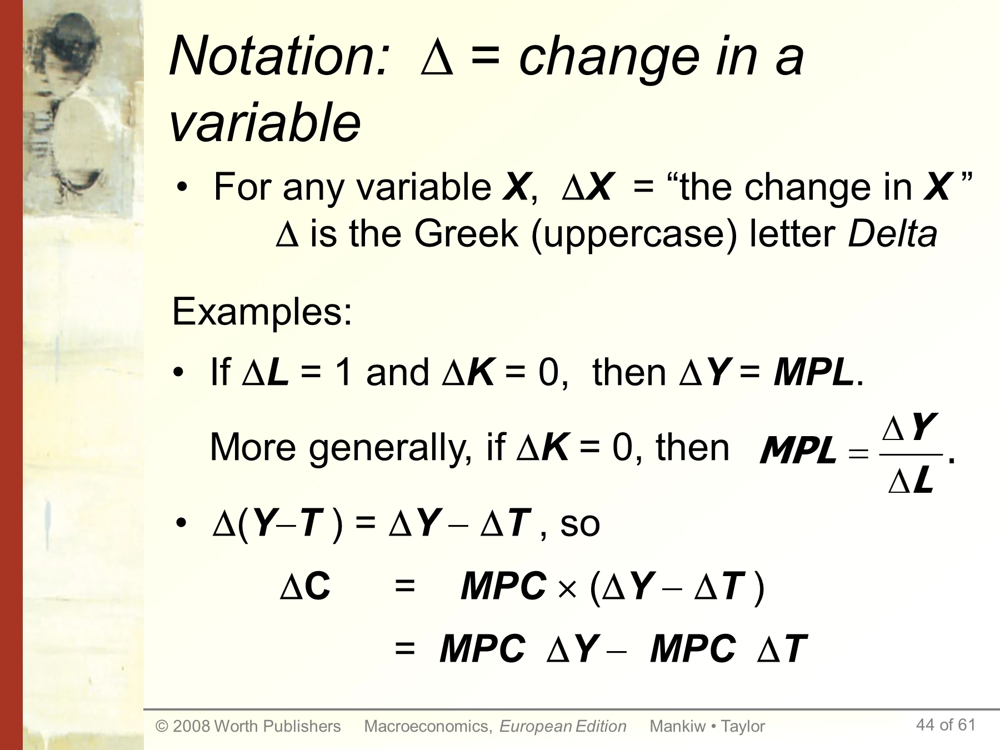
对任意变量 X，ΔX ＝「X 的变化量」。Δ 是希腊字母 Delta 的大写。
例子：
若 ΔL = 1 且 ΔK = 0，则 ΔY = MPL。
更一般地，若 ΔK = 0，则
MPL = ΔY / ΔL Δ(Y − T) = ΔY − ΔT ΔC = MPC × (ΔY − ΔT) = MPC ΔY − MPC ΔT后面几页要做大量的"某个外生变量变一点，其他变量跟着变多少"的计算，先把这个记号定下来。Δ 不是微分，是有限的变化量：从旧值到新值的差。
第一个例子把 MPL 写成了差商。K 不变、L 增加 1 时，产出的变化就是边际产量；把 ΔL 一般化，MPL 就等于 ΔY 除以 ΔL。这与 3-15 页的偏导数定义是同一件事的离散版本，只不过那里 ΔL 趋于零。
第二个式子用了 Δ 的线性性：差的差等于差的差。Δ(Y − T) 是 (Y − T) 的新值减旧值，展开就是 (Y新 − T新) − (Y旧 − T旧)，重排即 ΔY − ΔT。这一步之所以成立，是因为 Δ 是线性算子，加减法可以逐项进行。乘除法就不行了，Δ(XY) 不等于 ΔX · ΔY。
第三个式子把消费函数线性化。原来的 C(Y − T) 可能是一条曲线，但在变化量足够小的范围内，可以用切线近似：可支配收入变化 ΔY − ΔT，消费变化就是斜率 MPC 乘以这个变化。展开后得到两项：MPC·ΔY 是收入效应，−MPC·ΔT 是税收效应。后者带负号，因为减税（ΔT < 0）会通过提高可支配收入来增加消费。
这条式子是下一页练习的全部工具。给定 MPC 和任何一个外生变化，都能立刻算出消费变化多少、储蓄变化多少。用线性近似而不是原函数，好处是所有结果都能心算。
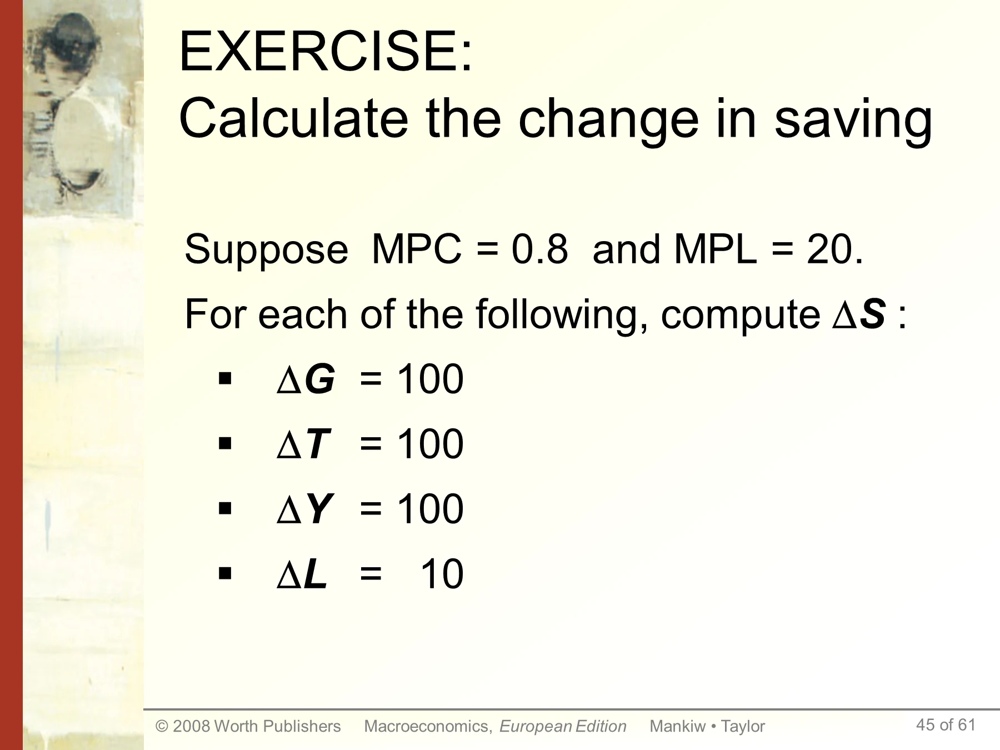
设 MPC = 0.8，MPL = 20。
对下列每种情形计算 ΔS：
四个小题各改变一个外生变量，其余保持不变。工具只有一条：由 S = Y − C − G 取变化量，得
ΔS = ΔY − ΔC − ΔG再把 ΔC = MPC (ΔY − ΔT) 代进去，得到一条只含外生变化的公式：
ΔS = (1 − MPC) ΔY + MPC ΔT − ΔG这条公式把三种冲击分开：产出变化乘以 (1 − MPC)，税收变化乘以 MPC，政府购买变化乘以 −1。三个系数都可以用 MPC ＝ 0.8 直接算出：0.2、0.8、−1。
第四小题需要多一步。ΔL ＝ 10 本身不是产出变化，要先换算：ΔY = MPL × ΔL = 20 × 10 = 200，再代入上面的公式。这一步是本练习容易漏掉的一环——把要素变化翻译成产出变化，再翻译成储蓄变化。
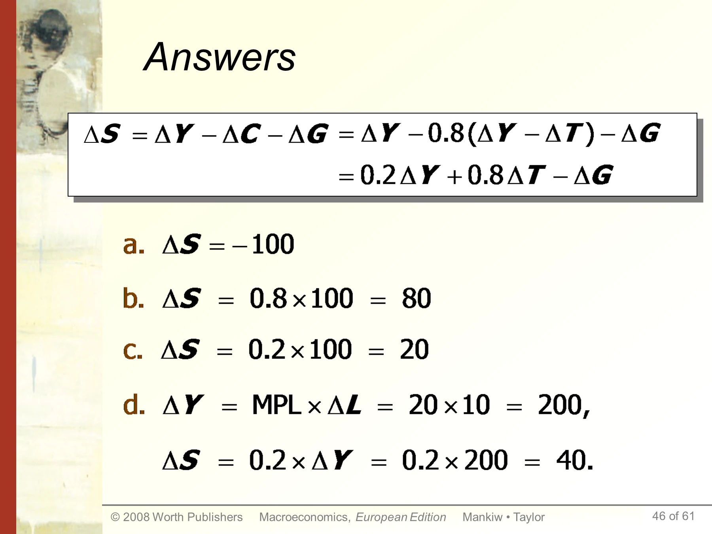
a. ΔS = −100
b. ΔS = 0.8 × 100 = 80
c. ΔS = 0.2 × 100 = 20
d. ΔY = MPL × ΔL = 20 × 10 = 200， ΔS = 0.2 × ΔY = 0.2 × 200 = 40
四个答案都可以从同一条式子里读出来，先把这条式子推完。由 S = Y − C − G 取变化量得 ΔS = ΔY − ΔC − ΔG，再由消费函数得 ΔC = 0.8 (ΔY − ΔT)。代入并整理：
ΔS = ΔY − 0.8ΔY + 0.8ΔT − ΔG = 0.2ΔY + 0.8ΔT − ΔG三个系数分别是 0.2、0.8、−1，各自对应一种冲击。
a 问的是政府购买增加。产出没变，税收没变，消费也没变，多出来的政府支出只能从储蓄里出，所以 ΔS ＝ −100，一分不少。这是政府支出挤出的最简版本：在产出固定的模型里，G 的增加是一对一的替代。
b 问的是税收增加。可支配收入减少同样数额，消费按 MPC 减少八十，剩下的二十由储蓄承担——但方向相反：消费少花了八十，政府的税收多了一百，两者相抵，国民储蓄净增八十。系数 0.8 就是 MPC，因为税收每增加一元，只有 MPC 那一部分会被消费掉，其余自动变成储蓄。
c 问的是产出增加。多出的收入里，八十被消费掉，只有二十存下来，所以 ΔS ＝ 20。这解释了为什么增长未必能改善财政：产出增加一百，国民储蓄只增加二十。
d 问的是多雇十单位劳动。先换算产出：MPL ＝ 20，十个人带来 200 的产出，再按上一条的系数折成储蓄，得 40。这里隐含假设了多雇的人拿到的是 MPL 作为工资——工资收入增加 200，全部进入家户部门，再按 MPC 花掉 160。
a 与 b 的对比最值得记住：同样是一百元的财政动作，增加购买让储蓄减少一百，增加税收让储蓄增加八十。方向相反，大小也不同，差别全在"这笔钱有没有经过家户的消费决策"。
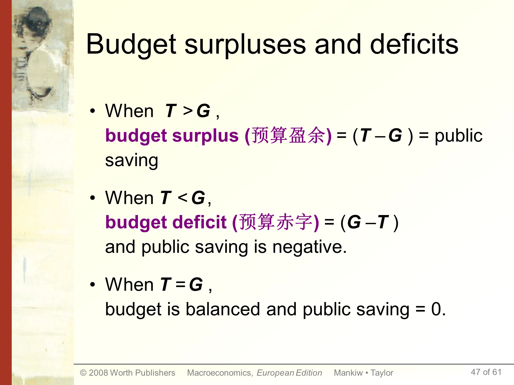
当 T > G 时，预算盈余 ＝ (T − G) ＝ 公共储蓄
当 T < G 时，预算赤字 ＝ (G − T)，且公共储蓄为负。
当 T ＝ G 时，预算平衡，公共储蓄 ＝ 0。
三种情形其实是同一个量的三种符号。T − G 为正叫盈余，为负叫赤字，为零叫平衡。注意赤字的定义写成了 G − T，即取绝对值，所以"赤字 100"和"公共储蓄 −100"说的是同一件事，只是符号约定不同。
把它放进储蓄公式里看：S = (Y − T − C) + (T − G)。赤字意味着第二项为负，国民储蓄被拖低；赤字越大，拖得越多。这就是为什么下一页开始讨论赤字时，第一句话总是"国民储蓄下降"。
需要分清的是赤字与债务。赤字是流量，是今年的收支差额；债务是存量，是历年赤字累积的结果。赤字转负为正，债务不会自动消失，只是不再增加。3-49 页的图画的正是这个存量。
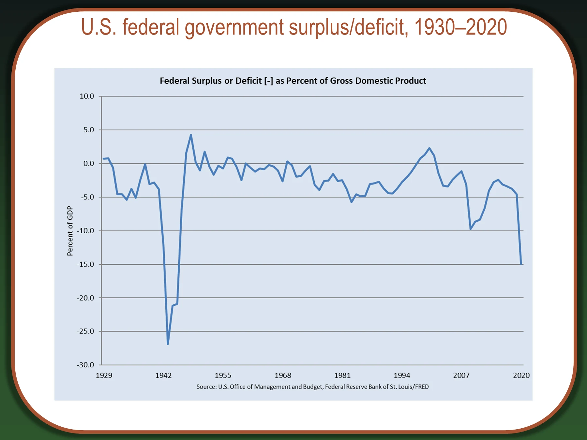
图中 横轴为年份（1930–2020），纵轴为盈余或赤字占 GDP 的百分比（约 −15% 至 +5%），零线以上为盈余，以下为赤字。二战期间出现极深的赤字；1950–1960 年代接近平衡；1970 年代转为持续赤字；1980 年代初赤字加深到约 −4% 至 −5%；1990 年代末出现短暂盈余；2009 年与 2020 年出现战后最深的赤字。
这张图是上一页三种情形的历史记录，纵轴用占 GDP 的比重表示，好处是不同年份的规模可比。
最深的两个坑对应两次非常支出：1940 年代初的二战，和 2009 年、2020 年的危机应对。战争与危机都是支出骤增、税收不增的场合，赤字自然膨胀。1950 与 1960 年代接近平衡，是因为战后增长带来的税收增长赶上了支出。
1970 年代开始转为持续性赤字，1980 年代初明显加深——这一段正是下一页案例研究的背景：减税叠加国防支出扩张。1990 年代后期出现过几年盈余，主要来自增长加速与股市繁荣带来的资本利得税。2001 年之后又回到赤字，此后除了短暂的几年，再没有回到平衡。
读这张图要注意它只画了联邦政府。州与地方政府通常接近平衡，把它们加进来，总公共储蓄的波动会小一些，但方向不变。
The huge deficit in the early 1940s was due to World War II. Wars are expensive.
The budget is close to balanced in the 1950s and 1960s, and it begins a downward trend in the 1970s.
The early 1980s saw the largest deficits (as % of GDP) of the post-World War II era, due to the Reagan tax cuts, defense buildup, and growth in entitlement program outlays.
The budget begins a positive trend in the early 1990s, and a surplus emerges in the late 1990s. There are several possible explanations for the improvement. First, President Bush (the first one) broke his campaign promise not to raise taxes. Second, the Clinton administration barely squeaked a deficit reduction deal through Congress. And third, and probably most importantly, there was a swelling of tax revenues due to the surge in economic growth and the stock market boom. (A stock market boom leads to large capital gains, which leads to large revenues from the capital gains tax.)
The budget swings to deficit again in 2001 due to the Bush tax cuts, multiple wars, and a recession. Recently, the budget deficit in current dollars has reached all-time highs, due to a sharp fall in tax receipts (Tax Cut and Jobs Act), Financial Crisis and Covid responses.
Data source: https://fred.stlouisfed.org/series/FYFSGDA188S
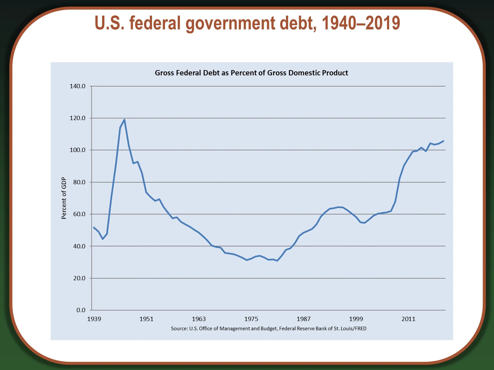
图中 横轴为年份（1940–2019），纵轴为联邦政府债务占 GDP 的百分比（0–120%）。曲线在 1940 年代中后期达到峰值约 106%，此后长期下降到 1970 年代中期的约 23%；1980 年代起持续上升，1995 年前后约 66%；2000 年前后回落，2008 年之后再度快速攀升。
债务是赤字的累积，所以这张图的形状是上一张图的积分：赤字年份多、赤字幅度大，曲线就往上走。
1946 年的峰值 106% 是二战留下的。此后三十年被两条力量压下去：一是战后增长使分母 GDP 变大，二是五六十年代接近平衡的预算让分子几乎不增。到 1974 年，债务率降到 23%，是二十世纪的最低点。
1980 年代之后方向反转。赤字持续存在，债务率从 1981 年的 32% 一路升到 1995 年的 66%；1990 年代后期的盈余让它短暂回落；2008 年之后又快速抬升。这个过程说明一件事：债务率的分母也在动。同样的赤字，在增长快的年份对债务率的推升更小；增长停滞时，即使赤字不变，债务率也会上升。
A later chapter will give more details, but for now, tell students that the government finances its deficits by borrowing from the public. (This borrowing takes the form of selling Treasury bonds.) Persistent deficits over time imply persistent borrowing, which causes the debt to increase.
After World War II, occasional budget surpluses allowed the government to retire some of its World War II debt; also, normal economic growth increased the denominator of the debt-to-GDP ratio. Starting in the early 1980s, corresponding to the beginning of huge and persistent deficits, we see a huge increase in the debt ratio, from 32% in 1981 to 66% in 1995. In the mid-1990s, budget surpluses and rapid growth started to reduce the debt ratio, but it started rising again in 2001 due to the economic slowdown, the Bush tax cuts, and higher spending.
The recent financial crisis/recession has increased the debt ratio, as revenues have fallen, while outlays (the stimulus package, bailouts) have sharply increased. Source: https://fred.stlouisfed.org/series/GFDGDPA188S
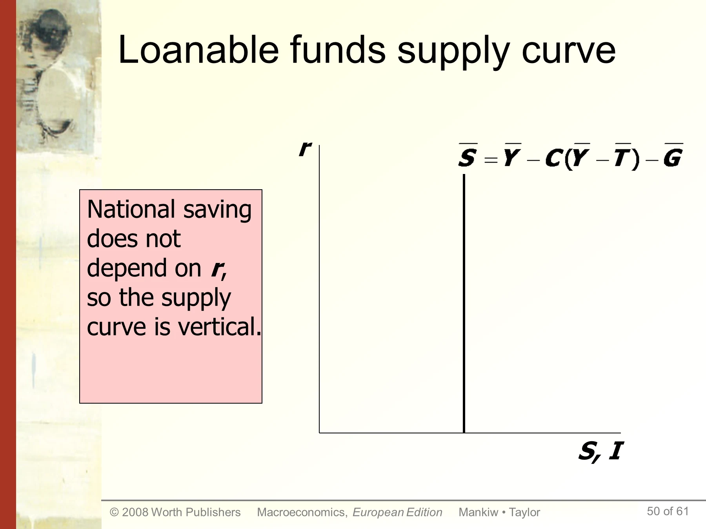
国民储蓄不依赖于 r，所以供给曲线是垂直的。
图中 横轴为可贷资金数量（S, I），纵轴为实际利率 r。一条垂直线标注为 S̄，位置由 S̄ = Ȳ − C(Ȳ − T̄) − Ḡ 决定。
这条垂线是整章最反直觉、也最关键的一处，值得把它的来历再走一遍。
储蓄的定义是 S = Y − C − G。三项里，Y 是 Ȳ，由要素和技术定住；G 是 Ḡ，外生；C 是 C(Ȳ − T̄)，由可支配收入定住，而可支配收入里也没有 r。三项全都不含 r，加起来自然也不含 r。不是我们假设储蓄不敏感，是这个式子算出来就不含 r。
背后的行为假设是：利率只影响人们以什么形式持有储蓄，不影响储蓄的数量。利率上升，家户可能把活期存款换成债券，但不会因此多存钱。这个假设在教科书层面是标准做法，因为它让图形简单——供给是一条线，均衡点只随需求移动。
垂直线有一个直接推论：均衡的投资量等于 S̄，与投资需求曲线的位置无关。想投资的项目再多，能借到的钱只有那么多，多出来的需求只会把利率推高，不会把投资量推高。这个结论在 3-58 页会被反复强调，也是它让很多人第一次读到时觉得别扭的地方。
放松这条假设的后果在 3-59、3-60 两页。那时供给曲线向上倾斜，投资需求增加会同时抬高 r 和 I，"投资量不变"的结论不再成立。
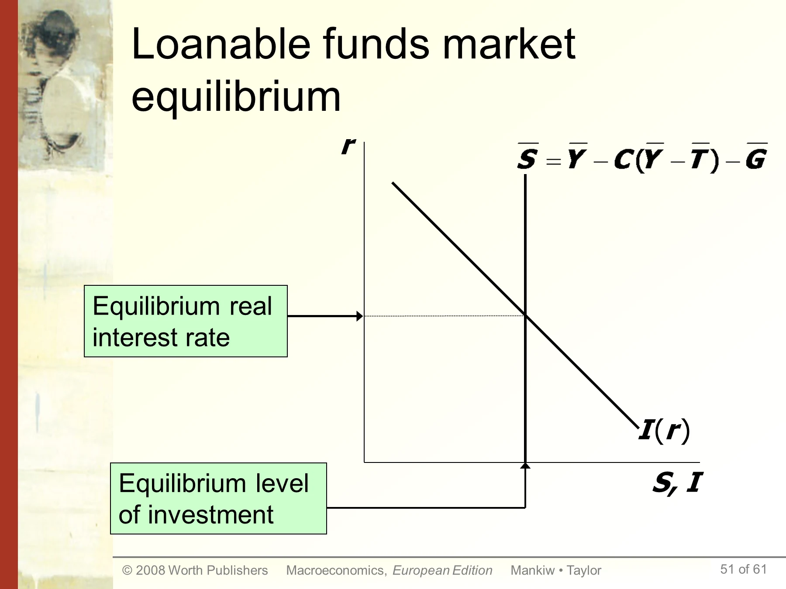
图中 横轴为 S、I，纵轴为 r。垂直的 S̄ 线与向下倾斜的 I(r) 相交，交点对应的纵坐标为「均衡实际利率」，横坐标为「均衡投资水平」。
两条线一交，两个量同时被定住：纵轴读出的均衡实际利率，横轴读出的均衡投资量。因为供给是垂线，横轴的均衡投资量必然等于 S̄——这一点在图上看得最清楚，交点的横坐标就是那条垂线的位置。
利率的作用在这里是配给。想借的钱（对应 I(r) 上较高的点）多于可借的钱（S̄），竞争会把利率抬上去，直到一部分项目变得不划算、退出借款行列。被挤掉的不是"借不到钱的人"，而是"在更高利率下不再划算的项目"。市场靠价格而不是靠排队来分配资金。
这个均衡还有一个名字：资金供求相等。它与产品市场的均衡是同一件事，下一页给出证明。两套说法可以互换使用，看哪个方便就用哪个——讲政策时用可贷资金图更直观，讲产出构成时用产品市场恒等式更直接。
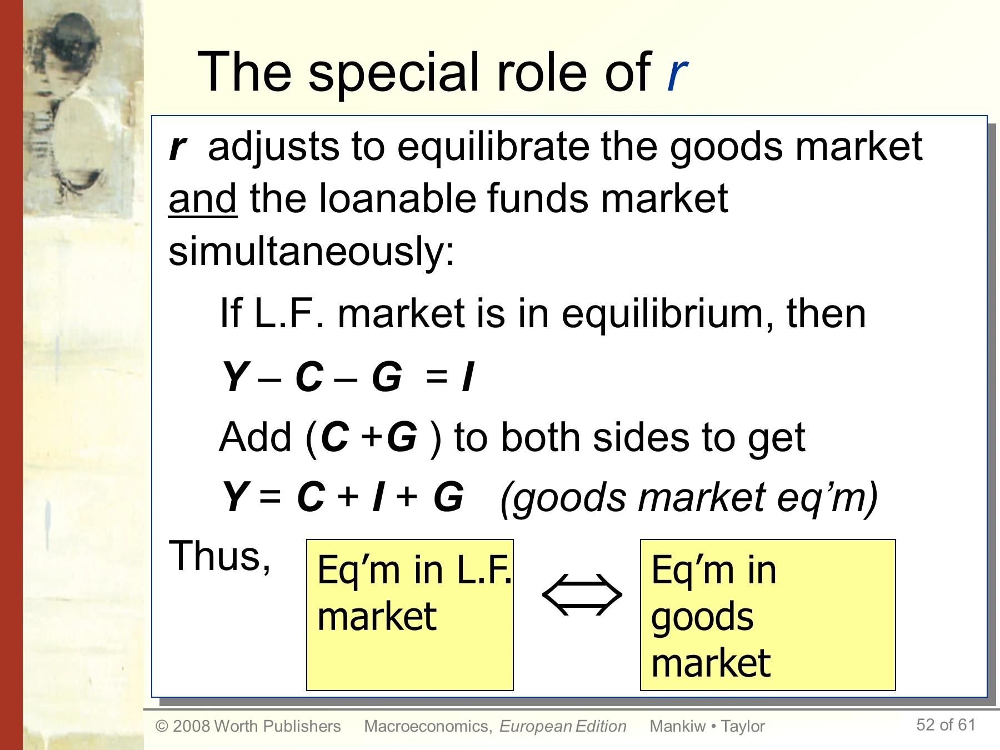
r 调整到使产品市场与可贷资金市场同时出清：
若可贷资金市场均衡，则
Y − C − G = I两边同时加上 (C + G)，得
Y = C + I + G （产品市场均衡）因此，可贷资金市场均衡 ⟺ 产品市场均衡。
上一页说可贷资金市场定了 r，这一页要说清它与产品市场的关系——不是两个市场，是同一个条件的两种写法。
证明只有一步。可贷资金均衡是 S = I，把 S 展开成 Y − C − G：
Y − C − G = I两边同加 C + G：
Y = C + I + G右边正是产品市场的均衡条件。每一步都是恒等变形，没有引入任何新假设，所以箭头是双向的：可贷资金均衡成立，产品市场必然均衡；反过来也成立。
这个等价性有个更一般的名字，叫瓦尔拉斯定律的简化版：如果经济中有 n 个市场，n−1 个出清，第 n 个自动出清。这里只有两个市场，一个出清就够。原因在于家户的预算约束把两个市场绑在一起——家户的收入要么消费、要么储蓄，企业的产出要么被消费、要么被投资、要么被政府买走，两边的账是同一本。
为什么要费劲证明这一点？因为它让"用哪张图"变成纯粹的技术选择。分析财政政策时，可贷资金图能直接显示 r 和 I 的变化；分析产出构成时，恒等式 Y ＝ C + I + G 更直接。两张图给出的答案必须一致，如果不一致，一定是某一步算错了。
顺带说清 r 的特殊地位：它是唯一一个同时出现在两个市场里的价格。在产品市场里它通过 I 影响需求，在可贷资金市场里它是价格本身。正因为如此，一个 r 就能让两个市场同时出清，不需要第二个调节变量。
This slide establishes that we can use the loanable funds supply/demand diagram to see how the interest rate that clears the goods market is determined.
Explain that the symbol means each one implies the other. The thing on the left implies the thing on the right, and vice versa.
More short-hand: "eq'm" is short for "equilibrium."
使储蓄曲线移动的因素：
供给曲线是一根垂线，它只能左右平移，不能转动。能让它移动的，只有改变 S̄ 数值的因素。
公共储蓄这一支来自财政政策。G 增加，S 减少，垂线左移；T 增加，C 减少，S 增加，垂线右移。注意这两个动作的方向不对称：G 每增加一元，S 减少一元；T 每增加一元，S 只增加 MPC 那么多，因为家户会相应减少消费。第 3-46 页的练习算的就是这个差别。
私人储蓄这一支来自家户行为。偏好变化——比如人口老龄化让退休储蓄动机增强——会移动垂线；税法变化也会，比如对利息收入征税会降低储蓄回报，对退休账户免税则提高回报。这些因素在本章的模型里都是外生的，只作为移动的来源，不被解释。
把移动方向记牢：任何让 S 变大的因素，垂线右移，r 下降，I 上升；任何让 S 变小的因素，垂线左移，r 上升，I 下降。这条规则适用于本页列出的所有因素，不需要每次重新推。
罗纳德·里根在 1980 年代初的政策：
按照我们的模型，这两项政策都会降低国民储蓄：
S̄ = Ȳ − C (Ȳ − T̄) − Ḡ图中 ↑Ḡ ⇒ ↓S̄ ↓T̄ ⇒ ↑C ⇒ ↓S̄
这两项政策单独看都是扩张性的，合在一起却从两个方向同时压低了国民储蓄，这正是它成为教学案例的原因。
先看国防支出。G 上升，公式里 Ḡ 那一项直接减掉，S̄ 一对一地减少。产出不变、消费不变，多出来的政府购买只能挤占原本可用于投资的那部分资源。
再看减税。T 下降使可支配收入 Y − T 上升，家户按 MPC 增加消费，C 上升，于是 S̄ 又被减掉一块。减税并没有"把钱留在私人部门所以储蓄增加"——钱确实留下了，但家户只把其中 1 − MPC 存起来，其余花掉。所以减税对国民储蓄的效应是 −MPC × ΔT，ΔT 为负时这一项为负。
两项加起来，S̄ 的下降幅度大于任何单项。图形上，垂线明显左移，沿向下倾斜的 I(r) 移动，均衡点向左上方走：利率上升，投资下降。这就是"赤字挤出投资"的标准版本。
政策制定者当初的预期并非如此。供给学派的论点是减税会刺激工作与投资，从而扩大产出，产出扩大后税基变宽，赤字未必恶化。本章的模型里没有这条渠道——L̄ 固定，减税不改变劳动供给，Y 不动。所以模型给出的结论必然是赤字扩大。这不是模型错了，而是它把供给面的反应关掉了；要讨论供给学派的主张，必须放松 L̄ 固定的假设。
同一套逻辑也适用于任何"减税 + 增支"的组合，与政治标签无关。判断标准只有一条：这两项动作是让 S̄ 变大还是变小。
Note the similarities with fiscal policy under Bush II in the last years.
1. 赤字的增加减少了国民储蓄……
2. ……这使实际利率上升……
3. ……从而降低了投资水平。
图中 横轴为 S、I，纵轴为 r。垂直的 S̄₁ 左移到 S̄₂；沿 I(r) 曲线，均衡点从 (I₁, r₁) 移到 (I₂, r₂)，r₂ > r₁，I₂ < I₁。
把上一页的文字变成图上的三步，每一步都只移动一个东西。
第一步是供给曲线平移。赤字意味着公共储蓄为负，S̄ 从原来的位置左移到 S̄₂，左移的距离正好等于赤字的增加额。注意这一步里需求曲线没动——投资机会没有变，变的是可借的资金。
第二步是沿曲线移动。新的垂线与原来的 I(r) 交在更高的位置，利率从 r₁ 升到 r₂。为什么必然上升？因为在原来的利率 r₁ 上，可借的资金变少了，而想借的项目数目没变，供不应求，价格只能上涨。
第三步读出投资量。新交点对应的横坐标是 I₂，小于原来的 I₁。减少的幅度等于垂线左移的幅度，因为供给是垂线，交点横坐标始终贴着它。储蓄减少了多少，投资就减少多少，一对一。
三步的顺序不能颠倒。先有储蓄的移动，才有利率的变化，才有投资的减少。如果直接说"赤字使投资减少"，会漏掉利率这个中间环节，也就无法解释为什么减少的幅度恰好等于储蓄的降幅，而不是别的数。
图上还有一个细节：利率上升的幅度取决于 I(r) 的斜率。曲线越平，同样的左移引起的利率上升越小，投资减少越多；曲线越陡，利率上升越多，投资减少越少。本章不讨论斜率，但这个依赖关系在评估政策效果时很重要。
| 变量 | 1970 年代 | 1980 年代 |
|---|---|---|
| T − G | −2.2 | −3.9 |
| S | 19.6 | 17.4 |
| r | 1.1 | 6.3 |
| I | 19.9 | 19.4 |
T − G、S、I 均以占 GDP 的百分比表示。
政府购买挤出了投资。
模型的预言有四条：赤字扩大、储蓄下降、利率上升、投资下降。把 1970 年代与 1980 年代的平均值并排，前三条都对上了。
赤字从 −2.2% 扩大到 −3.9%，恶化 1.7 个百分点；国民储蓄从 19.6% 降到 17.4%，减少 2.2 个百分点，幅度相当；实际利率从 1.1% 跳到 6.3%，升幅很大。三条方向一致，量级也说得通。
第四条出了问题。按模型，储蓄减少 2.2 个百分点，投资也应当减少同样的幅度，从 19.9% 降到 17.7%。实际只降到 19.4%，减少 0.5 个百分点，不到模型预言的四分之一。
差在哪里？差在封闭经济这个假设上。美国的储蓄减少时，国内的利率上升，外国资本被吸引进来购买美国资产，等于从国外进口了可贷资金。国内储蓄少了，但资金供给没有少那么多，投资得以维持。模型里只有一条供给曲线，现实中还有一条来自国外的供给。把经济开放，挤出效应就被削弱——这不是模型的失败，而是它标明的边界。
另外两个因素也起作用。一是 1980 年代的减税部分被通胀档位爬升（bracket creep）抵消，实际税收没有降那么多；二是投资需求曲线同期可能因技术变化右移，抵消了一部分挤出。这些都不在本章的模型里，但读数据时必须想到。
"挤出"这个词的用法要准确：它指政府借款推高利率、减少私人投资，不是说政府支出完全替代了私人支出。开放经济下挤出是不完全的，本章的封闭模型给出的是一对一的上限。
The model says that investment should have fallen as much as savings. Ask students why they think it didn't. Answer: in our closed economy model of chapter 3, the only source of loanable funds is national saving. But the U.S. is actually an open economy. In the face of a fall in national saving--the domestic supply of loanable funds, firms can finance their investment spending by importing loanable funds. More on this in an upcoming chapter.
使投资曲线移动的因素：
需求曲线移动的来源，是那些改变"在任一给定利率下愿意投资多少"的因素。
技术创新是最主要的一条。新技术要落地，必须买新设备、建新厂房、装新软件，这些支出在给定的利率下都会增加。注意这里说的是需要新资本品的创新，不是所有创新——一个纯粹改变管理流程的想法，可能不需要多少投资。
税法也能移动这条曲线。投资税收抵免允许企业把设备投资的一部分从税单里扣掉，等于降低了项目的实际成本，在同一个利率下更多项目变得划算。反向的政策，比如取消加速折旧，会把曲线左移。
区分"沿曲线移动"与"曲线移动"是这一节的全部要点。利率变化让均衡点沿着 I(r) 滑动，投资需求的变化让整条线平移。前者是价格效应，后者是外生冲击。下一页分析后者。
Investment tax credit: For example, suppose that the government increases personal income taxes and uses the extra revenue to provide tax cuts for those who invest in new capital. Such a change in the tax laws makes more investment projects profitable and, like a technological innovation, increases the demand for investment goods.
投资意愿的增加……
……提高了利率。
但均衡的投资水平无法增加，因为可贷资金的供给是固定的。
图中 横轴为 S、I，纵轴为 r。垂直的 S̄ 不动，I₁ 右移到 I₂；沿垂线，均衡点从 (I₁, r₁) 上移到 (I₂, r₂)，横坐标不变，r₂ > r₁。
这一页的结论第一次读几乎必然觉得不对：企业更想投资了，投资怎么会不增加？
先把图读准。需求曲线右移，从 I₁ 到 I₂，表示在每一个利率水平上，企业想投的项目都变多了。但供给是一根不动的垂线，交点只能沿着这根垂线上下移动。于是新的均衡点与旧的均衡点横坐标相同，只有纵坐标变了：利率从 r₁ 升到 r₂。
经济含义是这样：项目变多，企业争相借钱，利率被抬上去；利率一高，一部分原本划算的项目变得不划算，退出了。退出的数量恰好等于新增的数量，剩下的仍然是 S̄ 那么多。想投资的总量增加了，实际投资的量没有增加，被挤掉的是那些对利率最敏感、边际上最勉强的项目。
这里的关键在于"供给固定"这四个字。如果供给曲线向上倾斜，利率上升会带来更多储蓄，投资量就能增加——这正是 3-60 页要展示的对照。所以本页的结论不是"投资需求不重要"，而是"在储蓄不响应利率的模型里，投资需求只改变价格，不改变数量"。价格在这里承担了全部调节工作。
还要分清两个"投资"。一个是意愿投资，即企业在各利率下想投多少，它确实增加了，表现为曲线的右移；一个是均衡投资，即市场上实际发生的量，它等于储蓄，没有变。混淆这两个概念，就会得出"模型说投资需求增加不影响投资"这种自相矛盾的读法。
这个结论有一个可观察的推论：如果某一时期出现了大规模的技术创新，而储蓄没有同步增加，我们应当看到利率上升、投资量基本不变。历史上 1990 年代后期的美国与此有些相似——生产率加速、投资旺盛、实际利率上行，而国民储蓄率并未提高。当然现实中资本可以跨国流动，投资量还是增加了，这就又回到开放经济的问题。
When the supply of loanable funds is fixed, all that changes is that the price of loanable funds increases (r).
储蓄为什么会依赖 r？
投资需求增加的结果会有何不同？
前面那条垂直的供给曲线，靠的是消费函数里没有 r。这个省略站得住吗？
利率是储蓄的回报。利率上升，今天少消费一单位、明年能多消费的数量变大，储蓄变得更有吸引力，这是替代效应，指向更多储蓄。但利率上升同时让给定的储蓄目标更容易达成——想攒够一笔退休金的人，可以少存一点就够，这是收入效应，指向更少储蓄。两个效应方向相反，理论上无法先验地断定哪个更大。
经验研究通常发现，储蓄对利率的反应很小，接近于零。所以本章把供给画成垂线，作为一个可用的近似，而不是一条铁律。它的好处是让图形和代数都保持简单；代价是它给出了一些在极端情形下会失真的结论，最典型的就是上一页那个"投资量不变"。
把这条假设放松，不必重建整个模型，只需把供给曲线从垂直改成向上倾斜。下一页就在同一张图上做这个替换，看哪些结论会变、哪些不会。
...depend on the interest rate. Because the interest rate is the return to saving (as well as the cost of borrowing), a higher interest rate might reduce consumption and increase saving. If so, the saving curve would be upward sloping, rather than vertical.
投资需求增加抬高 r，
这诱发储蓄数量增加，
从而使 I 得以增加。
图中 横轴为 S、I，纵轴为 r。向上倾斜的储蓄曲线与 I(r) 相交于 (I₁, r₁)；投资需求右移后，新交点对应 (I₂, r₂)，两者都大于原值。
把垂线换成一条向上倾斜的曲线，同一张图给出完全不同的答案。
投资需求右移，交点沿储蓄曲线向右上方移动。结果有两个变化：利率上升，但升幅小于垂线情形；投资量增加，而垂线情形下它一动不动。机制是一条正反馈：需求增加推高利率，高利率吸引更多储蓄，多出来的储蓄支撑了更多的投资。价格不仅配给，还创造了供给。
两个情形的差别可以这样概括：供给越有弹性，投资需求增加越多地转化为投资量，越少地转化为利率上升。垂线是弹性为零的极端，此时全部转化为价格；水平线是弹性无穷大的极端，此时全部转化为数量，利率不动。现实介于两者之间，靠近垂线一侧。
这个对照也解释了为什么经济学家对"赤字是否挤出投资"的判断会分歧。分歧不在模型结构，而在储蓄的利率弹性有多大。认为弹性接近零的人，会得出完全挤出的结论；认为弹性显著的人，会得出部分挤出。本章采用的是前者，因为它简单，也因为它与数据大致相符。
注意两页的图必须并排看才有意义。单独看 3-58 会觉得结论荒谬，单独看 3-60 会觉得结论平常；只有把两条供给曲线放在一起，"假设决定结论"这件事才显出来。
总产出由以下因素决定：
竞争性企业会把每种要素雇到其边际产量等于其价格为止。
如果生产函数具有规模收益不变的性质，那么劳动收入加资本收入等于总收入（产出）。
经济的产出被用于：
实际利率调整到使以下两者的需求与供给相等：
国民储蓄的减少会使利率上升、投资下降。
投资需求的增加会使利率上升，但在可贷资金供给固定的情况下，不影响均衡的投资水平。
图中 图 A「中国与按收入分组的主要国家群体」。横轴为年份（1978–2008），纵轴为储蓄率（0–0.6）。五条曲线分别为中国、高收入国家、中等收入国家、低收入国家、世界平均。中国从 1978 年的约 0.38 起步，1980 年代中期降到 0.34 附近，1990 年代中期升到 0.44，2000 年前后回落到 0.37，此后快速上升，2007–2008 年达到 0.51–0.53。世界平均长期在 0.22 上下，高收入国家约 0.21，中等收入国家约 0.26，低收入国家从 0.08 升到 0.16 左右。
把中国放进国际比较，第一件看到的事是水平：三十年间中国的储蓄率始终在世界平均之上，2007 年前后达到 0.51，是世界平均的两倍多，也高于高收入国家一倍以上。第二件事是走势：世界平均几乎是一条平线，中国却走出了明显的起伏，并在 2000 年之后快速抬升。
2000 到 2007 年这一段最值得注意。储蓄率从 0.38 升到 0.51，七年上升十三个百分点，速度在世界范围内罕见。同期中国的投资率也很高，两者大致相配——在一个资本回报率高、增长快的经济里，高储蓄可以就地转化为高投资，而不必表现为低利率或资本外流。
用本章的框架看，高储蓄意味着可贷资金的供给曲线在很靠右的位置。给定投资需求，这会把利率压低，鼓励更多投资。这解释了中国为什么能在资本相对稀缺的阶段维持很高的投资率：不是利率被谁压低，而是储蓄本身就多。
但储蓄率高本身不是目的。它是当前消费被推迟的结果，代价是居民消费占收入的比重偏低。这个权衡在讨论扩大内需时会反复出现。
Source: Yang et al (2011)
38 percent in 2000. 51 percent in 2007.
图中 横轴为年份（1992–2007），纵轴为储蓄率（0–0.6）。四条曲线分别为企业、政府、家庭与总计。总计从 1992 年的约 0.36 升到 2007 年的 0.51；家庭长期在 0.17–0.22 之间；政府从约 0.04 升到 0.11；企业从约 0.11 升到 0.19，2004 年前后一度超过 0.23。
上一页只给了总量，这一页把它拆成三个部门，问题就变得具体：这十几个百分点的上升，是谁贡献的？
1999 到 2007 年，总储蓄率上升了 14.4 个百分点。按部门分解，家庭贡献 2.7 个百分点（家庭储蓄率从 20.2% 升到 22.9%），政府贡献 5.4 个百分点（从 2.7% 升到 8.1%），企业贡献 6.3 个百分点（从 13.7% 升到 20%）。三项相加 2.7 + 5.4 + 6.3 = 14.4，与总量对得上。
这个分解推翻了一个常见的印象。人们通常以为中国的储蓄率高是因为家庭爱存钱，但家庭那一项只贡献了不到五分之一，而且家庭储蓄率本身在三十年间起落不大。真正抬升总量的是企业和政府。
企业储蓄为什么高？它对应的是企业利润中没有分红、没有投资掉的部分。在增长快、利润厚的阶段，企业部门的留存收益迅速累积；同时，劳动收入份额偏低意味着利润在增加值中的占比高，留给企业的储蓄空间就大。这一条与本章前面讲的功能性分配直接相关：资本份额高，企业储蓄就高。
政府储蓄上升，对应的是财政收入增长快于政府消费性支出。这里要注意口径：政府储蓄不等于政府全部收支差额，它只算经常性收支，不含资本性支出。所以政府储蓄率高，与是否存在赤字并不矛盾。
家庭那一项虽然贡献小，绝对水平却不低。22.9% 的家庭储蓄率在世界上仍属高位，背后的原因通常归于预防性储蓄：社会保障和医疗保障覆盖不足，家庭要自己为养老、看病、教育攒钱。这个解释超出本章模型，但它提醒我们，储蓄率不是偏好参数，而是制度的产物。
分解的口径在不同文献间有差异，尤其是企业储蓄与家庭储蓄的边界（个体经营收入归哪一边）。这里采用的是图所依据的 Yang 等（2011）的处理，三项加总与总量一致。
1999年～2007年，中国的总储蓄率劲升了14.4个百分点，大致是这样分配的：家庭贡献了2.7个百分点（家庭储蓄率从1999年的20.2%上升至2007年的22.9%），政府贡献了5.4个百分点（政府储蓄率从1999年的2.7%上升至2007年的8.1%），企业贡献了6.3个百分点（企业储蓄率从1999年的13.7%上升至2007年的20%）。
这一章搭起了一个可以算出数的经济：给定资本 K̄、劳动 L̄ 和技术，生产函数 F 给出唯一的产出 Ȳ；竞争性企业把两种要素都雇到边际产品等于要素价格为止，于是实际工资等于 MPL、实际租赁物价等于 MPK；如果生产函数规模收益不变，这两份收入加起来恰好等于总产出。这条链上每一环都只依赖前一环，没有循环论证，这是它作为整门课基准模型的价值所在。
需求面接在这块固定的产出上。消费取决于可支配收入，投资取决于实际利率，政府购买被当作外生。三个行为方程里只有投资含 r，于是产品市场的均衡条件 Ȳ = C(Ȳ − T̄) + I(r) + Ḡ 变成一条只含一个未知数的方程，实际利率承担了让供求相等的全部工作。换成可贷资金市场的说法，就是储蓄等于投资；两种说法由预算约束绑在一起，可以互相替代。
结论的条件性必须记住。储蓄曲线垂直，是因为消费函数里没有利率；由此推出赤字一对一挤出投资、投资需求增加只抬高利率而不增加投资量。这两条都不是"经济学定律"，而是那个省略的推论。把储蓄写成利率的函数，供给曲线向上倾斜，同样的冲击就会同时改变利率和数量，挤出的幅度也小于一对一。判断一个结论能不能用，先看它依赖哪条假设，比记住结论本身更有用。
模型还标出了自己的边界。它解释不了失业，因为工资弹性让要素总是被雇满；解释不了增长，因为 K̄、L̄ 和技术都是常数；解释不了不平等的上升，因为它只有两类同质的人。数据检验也给出了同样的提示：1980 年代美国的赤字确实伴随着储蓄下降和利率上升，投资的下降却远小于模型预言，原因是对外借入不在模型里。这些边界不是缺陷清单，而是后面各章要逐一松开的地方。